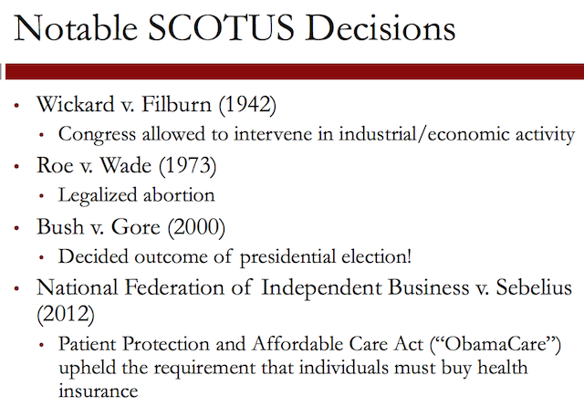
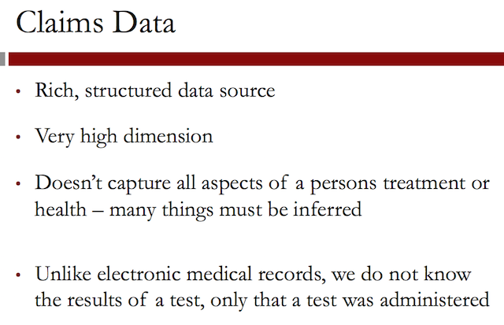
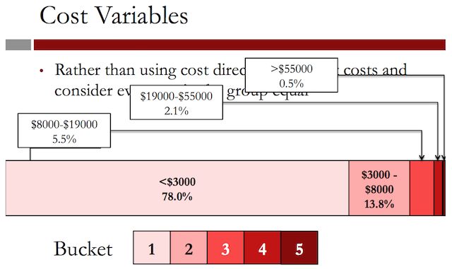
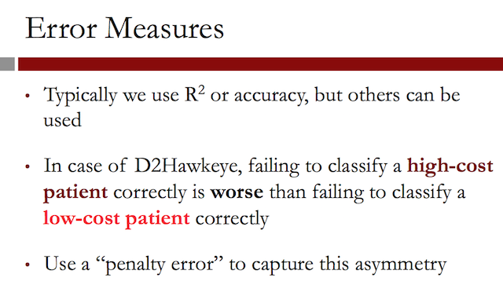
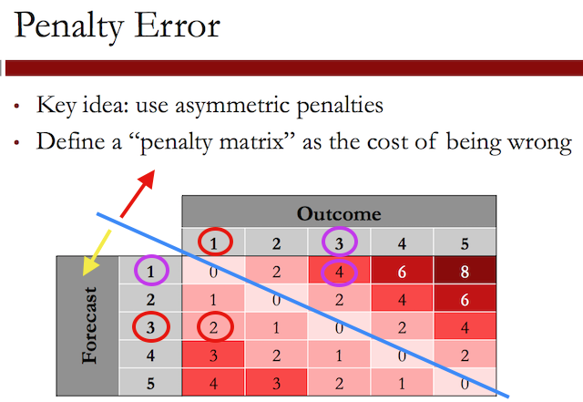
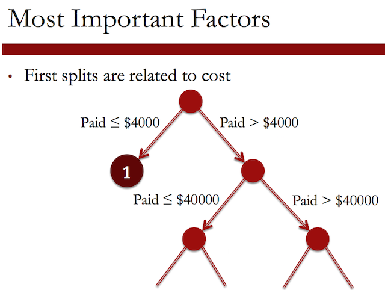
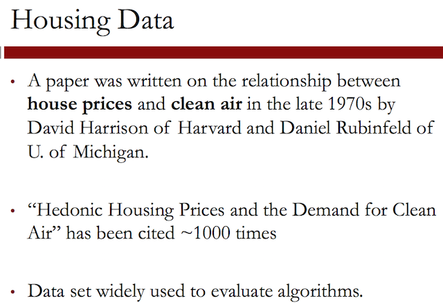
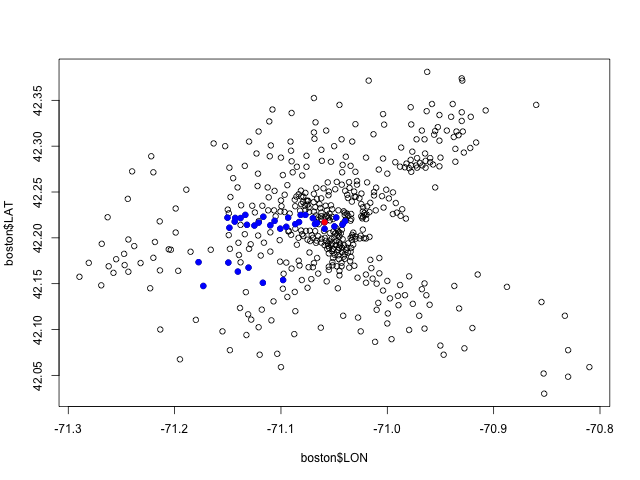

Week 4. Classification and Regression Trees
Regression trees and Random forest are more interpretable methods used in binary (clustering) applications.
1 Judge, Jury, and Classifier: An Introduction to Trees
Sources
The images in this video of the Scales of Justice, the United States Supreme Court Building, and the United States Supreme Court Justices all come from Wikimedia Commons.
Introduction
This seems like a very unconventional use of analytics, but in 2002 a group of political science and law academics decided to test if a model can do better than a group of experts at predicting the decisions of the Supreme Court. In this case, a very interpretable analytics method was used, called classification and regression trees.
Cases start at the district courts, where an initial decision is made about the case. The circuit courts hear appeals from the district courts, and can change the decision that was made. The Supreme Court is the highest level in the American legal system and makes the final decision on cases.
This image shows the nine Supreme Court justices from the time period 1994 through 2005. This was the longest period of time with the same set of justices in over 180 years.
There have been many significant and groundbreaking decisions made by the Supreme Court. These are a few notable decisions that were made.

In 1942, the Supreme Court decided on the Wickard v. Filburn case. This case recognized the power of the federal government to regulate economic activity.
Filburn was a farmer, who was growing wheat for on-farm consumption. However, the US had established limits on wheat production, and Filburn was exceeding those limits. So even though the extra wheat he was producing was for his own use and he had no intention of selling it, he was forced to destroy it.
In 1973, the Supreme Court decided on the Roe v. Wade case, one of the most well-known cases to this day. They decided to legalize abortion, and by doing this, prompted a national debate that continues today about the legality of abortion.
In 2000, the Supreme Court actually decided the outcome of the presidential election. The race was so close in the state of Florida, that a recount of the ballots was required. But the Florida Secretary of State certified that President Bush was the winner before the recount could be completed.
The case then went to the Supreme Court where it was ruled that all ballots needed to be recounted. But since this could not be done before the winner had to be declared, President Bush won the state of Florida, and thus, the presidency.
A very recent case from 2012 dealt with the Patient Protection and Affordable Care Act, commonly called ObamaCare, which requires most Americans to have health insurance. The Supreme Court upheld this requirement.

Since non-profits, voters, and anybody interested in long-term planning can benefit from knowing the outcomes of the Supreme Court cases before they happen, legal academics and political scientists regularly make predictions of Supreme Court decisions from detailed studies of the cases and individual justices.
They wanted to see if an analytical model could outperform the expertise and intuition of a large group of experts. Martin used a method called classification and regression trees, or CART. In this case, the outcome is binary.

1.1 Quick Question (1 point possible)
How much data do you think Andrew Martin should use to build his model?
1.1.1 Answer
[X]Information from all cases with the same set of justices as those he is trying to predict. Data from cases where the justices were different might just add noise to our problem.[ ]Only information from the most recent year. Since the justices change every year, only this information would be useful.
Explanation
Andrew Martin should use all data from the cases with the same set of justices. The justices do not change every year, and typically you want to use as much data as you have available.
1.2 Video 2: CART
To predict the outcomes of the Supreme Court, Martin used cases from 1994 through 2001. He chose this period of time because the Supreme Court was composed of the same nine justices that were justices when he made his predictions in 2002.
This was a very rare data set, since as I mentioned earlier, this was the longest period of time with the same set of justices in over 180 years. This allowed Martin to use a larger data set then might have been available if he was doing this experiment at a different time.

- The circuit court of origin is the circuit or lower court where the case came from. There are 13 different circuit courts in the United States. The 1st through 11th and Washington, DC courts are defined by region. And the federal court is defined by the subject matter of the case.
- The issue area of the case gives each case a category, like civil rights or federal taxation.
- The type of petitioner and type of respondent define two parties in the case. Some examples are the United States, an employer, or an employee.
- The ideological direction of the lower court decision describes whether the lower court made what was considered a liberal or a conservative decision.
- The last variable indicates whether or not the petitioner argued that a law or practice was unconstitutional.
To collect this data, Martin and his colleagues read through all of the cases and coded the information. Some of it, like the circuit court, is straightforward. But other information required a judgment call, like the ideological direction of the lower court.
1.2.1 Logistic regression interpretation issues
Now that we have our data and variables, we are ready to predict the decisions of Justice Stevens.

We can use logistic regression, and we get a model where some of the most significant variables are:
whether or not the case is from the 2nd circuit court, with a coefficient of 1.66; whether or not the case is from the 4th circuit court, with a coefficient of 2.82; and whether or not the lower court decision was liberal, with a coefficient of (negative) -1.22.
While this tells us that the case being from the 2nd or 4th circuit courts is predictive of Justice Stevens reversing the case, and the lower court decision being liberal is predictive of Justice Stevens affirming the case, it's difficult to understand which factors are more important due to things like the scales of the variables, and the possibility of multicollinearity.
It's also difficult to quickly evaluate what the prediction would be for a new case. So instead of logistic regression, Martin and his colleagues used a method called classification and regression trees, or CART.
1.2.2 CART
This method builds what is called a tree by splitting on the values of the independent variables. To predict the outcome for a new observation or case, you can follow the splits in the tree and at the end, you predict the most frequent outcome in the training set that followed the same path.
Some advantages of CART are that it does not assume a linear model, like logistic regression or linear regression, and it's a very interpretable model.
1.2.3 Example
This plot shows sample data for two independent variables, x and y, and each data point is colored by the outcome variable, red or gray.
CART tries to split this data into subsets so that each subset is as pure or homogeneous as possible. The first three splits that CART would create are shown here. Then the standard prediction made by a CART model is just the majority in each subset.
If a new observation fell into one of these two subsets (RED), then we would predict red, since the majority of the observations in those subsets are red.
However, if a new observation fell into one of these two subsets (GRAY), we would predict gray, since the majority of the observations in those two subsets are gray.
A CART model is represented by what we call a tree. The tree for the splits we just generated is shown on the right. The first split tests whether the variable x is less than 60.
If yes, the model says to predict red, and if no, the model moves on to the next split. Then, the second split checks whether or not the variable y is less than 20.
If no, the model says to predict gray, but if yes, the model moves on to the next split. The third split checks whether or not the variable x is less than 85.
If yes, then the model says to predict red, and if no, the model says to predict gray. There are a couple things to keep in mind when reading trees.
Important
There are a couple things to keep in mind when reading trees. In this tree, and for the trees we'll generate in R, a yes response is always to the left and a no response is always to the right. Also, make sure you always start at the top of the tree. The x less than 85 split only counts for observations for which x is greater than 60 and y is less than 20.
1.3 Quick Question (2 points possible)
Suppose that you have the following CART tree:

1.3.1 Question a
How many splits are in this tree?
1.3.1.1 Answer
3 splits.
1.3.2 Question b
For which data observations should we predict "Red", according to this tree? Select all that apply.
1.3.2.1 Answer
[X]If X is less than 60, and Y is any value.[ ]If X is greater than or equal to 60, and Y is greater than or equal to 20.[ ]If X is greater than or equal to 85, and Y is less than 20.[X]If X is greater than or equal to 60 and less than 85, and Y is less than 20.
Explanation
- This tree has three splits.
- The first split says to predict "Red" if X is less than 60, regardless of the value of Y.
- Otherwise, we move to the second split. The second split says to
check the value of Y
- if it is greater than or equal to 20, predict "Gray".
- Otherwise, we move to the third split. This split checks the value
of X again.
- If X is less than 85 (and greater than or equal to 60 by the first split) and Y is less than 20, then we predict "Red". Otherwise, we predict "Gray".
1.4 Video 3: Splitting and Predictions

In R, this is called the minbucket parameter, for the minimum number of observations in each bucket or subset.
The smaller minbucket is, the more splits will be generated. But if it's too small, overfitting will occur. This means that CART will fit the training set almost perfectly. But this is bad because then the model will probably not perform well on test set data or new data.
On the other hand, if the minbucket parameter is too large, the model will be too simple and the accuracy will be poor.
We will learn about a nice method for selecting the stopping parameter.

In the Supreme Court case, we'll be classifying observations as either affirm or reverse. Instead of just taking the majority outcome to be the prediction, we can compute the percentage of data in a subset of each type of outcome.
As an example, if we have a subset with 10 affirms and two reverses, then 87% of the data is affirm. Then, just like in logistic regression, we can use a threshold value to obtain our prediction.
For this example, we would predict affirm with a threshold of 0.5 since the majority is affirm. But if we increase that threshold to 0.9, we would predict reverse for this example.
Then by varying the threshold value, we can compute an ROC curve and compute an AUC value to evaluate our model.

1.5 Quick Question (1 point possible)
Suppose you have a subset of 20 observations, where 14 have outcome A and 6 have outcome B. What proportion of observations have outcome A?
writeLines("\n :: Proportion of observations of A:") A <- 14; B <- 6; A / (A + B)
:: Proportion of observations of A: [1] 0.7
1.5.1 Answer
Explanation
The fraction of observations that have outcome A is
\($ \frac{14}{14 + 6} = 0.7. $\)
1.6 Quick Question (3 points possible)
The following questions ask about the subset of 20 observations from the previous question.
1.6.1 Question
If we set the threshold to 0.25 when computing predictions of outcome A, will we predict A or B for these observations?
1.6.1.1 Answer
[X]A[ ]B
1.6.2 Question
If we set the threshold to 0.5 when computing predictions of outcome A, will we predict A or B for these observations?
1.6.2.1 Answer
[X]A[ ]B
1.6.3 Question
If we set the threshold to 0.75 when computing predictions of outcome A, will we predict A or B for these observations?
1.6.3.1 Answer
[ ]A[X]B
1.7 Video 4: CART in R
In the next few videos, we'll be using the dataset stevens.csv to build trees in R. Please download the dataset to follow along. This data comes from the Supreme Court Forecasting Project website.
An R script file with all of the R commands used in this lecture can be downloaded here.
1.7.1 Download the data sets
In this part we can download the data
library(parallel) if(!file.exists("../data")) { dir.create("../data") } fileUrl <- "https://courses.edx.org/asset-v1:MITx+15.071x_2a+2T2015+type@asset+block/stevens.csv" fileName <- "stevens.csv" dataPath <- "../data" filePath <- paste(dataPath, fileName, sep = "/") if(!file.exists(filePath)) { download.file(fileUrl, destfile = filePath, method = "curl") } list.files("../data")
[1] "AirlinesCluster.csv" "AnonymityPoll.csv" [3] "baseball.csv" "BoeingStock.csv" [5] "boston.csv" "ClaimsData.csv" [7] "ClaimsData.csv.zip" "climate_change.csv" [9] "clinical_trial.csv" "ClusterMeans.ods" [11] "CocaColaStock.csv" "CountryCodes.csv" [13] "CPSData.csv" "dailykos.csv" [15] "eBayAll.RData" "eBayiPadTest.csv" [17] "eBayiPadTrain.csv" "edges.csv" [19] "emails.csv" "energy_bids.csv" [21] "federalFundsRate.csv" "finalExam-Households.csv" [23] "flower.csv" "FluTest.csv" [25] "FluTrain.csv" "framingham.csv" [27] "gerber.csv" "GEStock.csv" [29] "healthy.csv" "households.csv" [31] "IBMStock.csv" "intl.csv" [33] "intlall.csv" "loans_imputed.csv" [35] "loans.csv" "MetroAreaCodes.csv" [37] "movieLens.txt" "MoviesP1Final.csv" [39] "murders.csv" "mvt.csv" [41] "mvtWeek1.csv" "NBA_test.csv" [43] "NBA_train.csv" "parole.csv" [45] "pisa2009test.csv" "pisa2009train.csv" [47] "PollingData_Imputed.csv" "PollingData.csv" [49] "PollingImputed.csv" "ProcterGambleStock.csv" [51] "quality.csv" "README.md" [53] "SampleSubmission.csv" "songs.csv" [55] "stevens.csv" "StocksCluster.csv" [57] "stopwords.txt" "SubmissionGBM1.csv" [59] "SubmissionGBM2.csv" "SubmissionLR2.csv" [61] "SubmissionLR3.csv" "SubmissionLR4.csv" [63] "SubmissionLR5.csv" "SubmissionLR8.csv" [65] "SubmissionLR9.csv" "SubmissionRF1.csv" [67] "SubmissionSimpleLogV1.csv" "tumor.csv" [69] "tweets.csv" "tweetsU7.csv" [71] "USDA.csv" "users.csv" [73] "WHO_Europe.csv" "WHO.csv" [75] "WHOu7.csv" "wiki.csv" [77] "wine_test.csv" "wine.csv"
1.7.2 Load the data set
writeLines(" Loading data into their data frames.") stevens <- read.table("../data/stevens.csv", sep = ",", header = TRUE) str(stevens) summary(stevens)
Loading data into their data frames.
'data.frame': 566 obs. of 9 variables:
$ Docket : Factor w/ 566 levels "00-1011","00-1045",..: 63 69 70 145 97 181 242 289 334 436 ...
$ Term : int 1994 1994 1994 1994 1995 1995 1996 1997 1997 1999 ...
$ Circuit : Factor w/ 13 levels "10th","11th",..: 4 11 7 3 9 11 13 11 12 2 ...
$ Issue : Factor w/ 11 levels "Attorneys","CivilRights",..: 5 5 5 5 9 5 5 5 5 3 ...
$ Petitioner: Factor w/ 12 levels "AMERICAN.INDIAN",..: 2 2 2 2 2 2 2 2 2 2 ...
$ Respondent: Factor w/ 12 levels "AMERICAN.INDIAN",..: 2 2 2 2 2 2 2 2 2 2 ...
$ LowerCourt: Factor w/ 2 levels "conser","liberal": 2 2 2 1 1 1 1 1 1 1 ...
$ Unconst : int 0 0 0 0 0 1 0 1 0 0 ...
$ Reverse : int 1 1 1 1 1 0 1 1 1 1 ...
Docket Term Circuit Issue
00-1011: 1 Min. :1994 9th :122 CriminalProcedure:132
00-1045: 1 1st Qu.:1995 5th : 53 JudicialPower :102
00-1072: 1 Median :1997 11th : 49 EconomicActivity : 98
00-1073: 1 Mean :1997 7th : 47 CivilRights : 74
00-1089: 1 3rd Qu.:1999 4th : 46 DueProcess : 43
00-121 : 1 Max. :2001 8th : 44 FirstAmendment : 39
(Other):560 (Other):205 (Other) : 78
Petitioner Respondent LowerCourt
OTHER :175 OTHER :177 conser :293
CRIMINAL.DEFENDENT : 89 BUSINESS : 80 liberal:273
BUSINESS : 79 US : 69
STATE : 48 CRIMINAL.DEFENDENT: 58
US : 48 STATE : 56
GOVERNMENT.OFFICIAL: 38 EMPLOYEE : 28
(Other) : 89 (Other) : 98
Unconst Reverse
Min. :0.0000 Min. :0.0000
1st Qu.:0.0000 1st Qu.:0.0000
Median :0.0000 Median :1.0000
Mean :0.2473 Mean :0.5459
3rd Qu.:0.0000 3rd Qu.:1.0000
Max. :1.0000 Max. :1.0000
Now, let's take a look at our data using the str function. We have
566 observations, or Supreme Court cases, and nine different
variables.
Docket is just a unique identifier for each case, and Term is the year of the case. Then we have our six independent variables: the Circuit court of origin, the Issue area of the case, the type of Petitioner, the type of Respondent, the lower court LowerCourt direction, and whether or not the petitioner argued that a law or practice was unconstitutional Unconst. The last variable is our dependent variable, whether or not Justice Stevens voted to reverse the case: 1 for reverse, and 0 for affirm.
Now before building models, we need to split our data into a training set and a testing set.
writeLines("\n :: Split the data:") library(caTools) set.seed(3000) spl <- sample.split(stevens$Reverse, SplitRatio = 0.7) Train <- subset(stevens, spl == TRUE) Test <- subset(stevens, spl == FALSE) writeLines("\n :: Dimensions of the training set:") dim(Train) writeLines("\n :: Dimensions of the testing set:") dim(Test)
:: Split the data: :: Dimensions of the training set: [1] 396 9 :: Dimensions of the testing set: [1] 170 9
Now, we're ready to build our CART model. First we need to install and
load the rpart package and the rpart plotting package.
writeLines("\n :: Install new package: rpart ...") ## install.packages('rpart', repos='http://cran.rstudio.com/') ## writeLines("\n :: Install new package: rpart.plot ...") ## install.packages('rpart.plot', repos='http://cran.rstudio.com/') writeLines("\n :: NOTE: Please comment after install once...") writeLines("\n :: Loading rpart and rpart.plot...") library(rpart) library(rpart.plot) writeLines("\n :: rpart and r.part.plot libraries loaded...")
:: Install new package: rpart ... :: NOTE: Please comment after install once... :: Loading rpart and rpart.plot... :: rpart and r.part.plot libraries loaded...
1.7.3 Building the CART model
Now we can create our CART model using the rpart function.
writeLines("\n :: CART model DONE...") StevensTree <- rpart(Reverse ~ Circuit + Issue + Petitioner + Respondent + LowerCourt + Unconst, data = Train, method = "class", minbucket = 25)
:: CART model DONE...

Figure 16: CART model for the Stevens prediction.
The last argument we'll give is minbucket = 25. This limits the tree
so that it doesn't overfit to our training set. We selected a value of
25, but we could pick a smaller or larger value.
If you're not sure what the abbreviations are, you could create a table of the variable to see all of the possible values.
1.7.4 Making predictions in the testing set
Comparing this to a logistic regression model, we can see that it's very interpretable. A CART tree is a series of decision rules which can easily be explained. Now let's see how well our CART model does at making predictions for the test set.
And we'll add a third argument here, which is ~type = "class"~. We need to give this argument when making predictions for our CART model if we want the majority class predictions. This is like using a threshold of \(0.5\).
We'll see in a few minutes how we can leave this argument out and still get probabilities from our CART model.
writeLines("\n :: Make predictions:") PredictCART <- predict(StevensTree, newdata = Test, type = "class") table(Test$Reverse, PredictCART) writeLines("\n :: Overall accuracy:") (41+71)/(41+36+22+71)
:: Make predictions:
PredictCART
0 1
0 41 36
1 22 71
:: Overall accuracy:
[1] 0.6588235
Now let's compute the accuracy of our model by building a confusion
matrix. So we'll use the table function, and first give the true
outcome values– Test$Reverse, and then our predictions,
PredictCART.
So the accuracy of our CART model is \(0.659\).
If you were to build a logistic regression model, you would get an accuracy of 0.665 and a baseline model that always predicts Reverse, the most common outcome, has an accuracy of 0.547. So our CART model significantly beats the baseline and is competitive with logistic regression.
Lastly, to evaluate our model, let's generate an ROC curve for our CART model using the ROCR package.
writeLines("\n :: ROC curve:") library(ROCR) PredictROC <- predict(StevensTree, newdata = Test) head(PredictROC) pred <- prediction(PredictROC[,2], Test$Reverse) perf <- performance(pred, "tpr", "fpr")
:: ROC curve:
Loading required package: gplots
Attaching package: ‘gplots’
The following object is masked from ‘package:stats’:
lowess
0 1
1 0.3035714 0.6964286
3 0.3035714 0.6964286
4 0.4000000 0.6000000
6 0.4000000 0.6000000
8 0.4000000 0.6000000
21 0.3035714 0.6964286
PredictROC
For each observation in the test set, it gives two numbers which can be thought of as the probability of outcome 0 and the probability of outcome 1. More concretely, each test set observation is classified into a subset, or bucket, of our CART tree.
These numbers give the percentage of training set data in that subset with outcome 0 and the percentage of data in the training set in that subset with outcome 1.
Now we need to use the performance function, where the first argument is the outcome of the prediction function, and then the next two arguments are true positive rate and false positive rate, what we want on the x and y-axes of our ROC curve.

Figure 17: The ROC curve for the justice Stevens.
1.8 Quick Question (3 points possible)
1.8.1 Question a
Compute the AUC of the CART model from the previous video, using the following command in your R console:
writeLines("\n :: The AUC for the CART:") as.numeric(performance(pred, "auc")@y.values)
:: The AUC for the CART: [1] 0.6927105
What is the AUC?
The AUC for the CART = 0.6927105.
1.8.2 Question b
Now, recall that in Video 4, our tree had 7 splits. Let's see how this changes if we change the value of minbucket.
First build a CART model that is similar to the one we built in Video 4, except change the minbucket parameter to 5. Plot the tree.
StevensTree2 <- rpart(Reverse ~ Circuit + Issue + Petitioner + Respondent + LowerCourt + Unconst, data = Train, method = "class", minbucket = 5) writeLines("\n :: CART model 2 DONE...")
:: CART model 2 DONE...

Figure 18: CART court model with a minbucket of 5.
How many splits does the tree have?
1.8.2.1 Answer
The tree have 16 splits.
1.8.3 Question c
Now build a CART model that is similar to the one we built in Video 4, except change the minbucket parameter to 100. Plot the tree.
StevensTree3 <- rpart(Reverse ~ Circuit + Issue + Petitioner + Respondent + LowerCourt + Unconst, data = Train, method = "class", minbucket = 100) writeLines("\n :: CART model 3 DONE...")
:: CART model 3 DONE...

Figure 19: CART court model with a minbucket of 5.
How many splits does the tree have?
1.8.3.1 Answer
This tree have only 1 split.
1.9 Video 5: Random Forests
Important Note: In this video, we install the package randomForest. If you get an installation warning that says:
"Warning: cannot remove prior installation of packages 'randomForest'", please try quitting and re-starting R.
writeLines("\n :: Install new package: randomForest ...") ## install.packages('randomForest', repos='http://cran.rstudio.com/') writeLines("\n :: NOTE: Please comment after install once...") library(randomForest) writeLines("\n :: Library randomForest loaded...")
:: Install new package: randomForest ... :: NOTE: Please comment after install once... randomForest 4.6-10 Type rfNews() to see new features/changes/bug fixes. :: Library randomForest loaded...
We'll introduce a method that is similar to CART called random forests. This method was designed to improve the prediction accuracy of CART and works by building a large number of CART trees. Unfortunately, this makes the method less interpretable than CART, so often you need to decide if you value the interpretability or the increase in accuracy more.
To make a prediction for a new observation, each tree in the forest votes on the outcome and we pick the outcome that receives the majority of the votes.
So how does random forests build many CART trees?
Random forests only allows each tree to split on a random subset of the available independent variables, and each tree is built from what we call a bagged or bootstrapped sample of the data. This just means that the data used as the training data for each tree is selected randomly with replacement.
Suppose we have five data points in our training set. We'll call them 1, 2, 3, 4, and 5. For the first tree, we'll randomly pick five data points randomly sampled with replacement.
So the data could be 2, 4, 5, 2, and 1. Each time we pick one of the five data points regardless of whether or not it's been selected already. These would be the five data points we would use when constructing the first CART tree.
Then we repeat this process for the second tree. This time the data set might be 3, 5, 1, 5, and 2. And we would use this data when building the second CART tree. Then we would repeat this process for each additional tree we want to create.
So since each tree sees a different set of variables and a different set of data, we get what's called a forest of many different trees. Just like CART, random forests has some parameter values that need to be selected. The first is the minimum number of observations in a subset, or the minbucket parameter from CART.

When we create a random forest in R, this will be called nodesize. A smaller value of nodesize, which leads to bigger trees, may take longer in R. Random forests is much more computationally intensive than CART. The second parameter is the number of trees to build, which is called ntree in R. This should not be set too small, but the larger it is the longer it will take. A couple hundred trees is typically plenty. A nice thing about random forests is that it's not as sensitive to the parameter values as CART is.
For random forests, as long as the selection is reasonable, it's OK.
writeLines("\n :: Build random forest model:") StevensForest <- randomForest(Reverse ~ Circuit + Issue + Petitioner + Respondent + LowerCourt + Unconst, data = Train, ntree = 200, nodesize = 25 ) summary(StevensForest)
:: Build random forest model:
Warning message:
In randomForest.default(m, y, ...) :
The response has five or fewer unique values. Are you sure you want to do regression?
Length Class Mode
call 5 -none- call
type 1 -none- character
predicted 396 -none- numeric
mse 200 -none- numeric
rsq 200 -none- numeric
oob.times 396 -none- numeric
importance 6 -none- numeric
importanceSD 0 -none- NULL
localImportance 0 -none- NULL
proximity 0 -none- NULL
ntree 1 -none- numeric
mtry 1 -none- numeric
forest 11 -none- list
coefs 0 -none- NULL
y 396 -none- numeric
test 0 -none- NULL
inbag 0 -none- NULL
terms 3 terms call
You should see an interesting warning message here. In CART, we added the argument ~method = "class"~, so that it was clear that we're doing a classification problem. As I mentioned earlier, trees can also be used for regression problems, which you'll see in the recitation.
The randomForest function does not have a method argument. So when we want to do a classification problem, we need to make sure outcome is a factor. Let's convert the variable Reverse to a factor variable in both our training and our testing sets.
writeLines("\n :: Converting outcome to factor...") Train$Reverse <- as.factor(Train$Reverse) Test$Reverse <- as.factor(Test$Reverse)
:: Converting outcome to factor...
writeLines("\n :: Try again to build the RF model:") StevensForest <- randomForest(Reverse ~ Circuit + Issue + Petitioner + Respondent + LowerCourt + Unconst, data = Train, ntree = 200, nodesize = 25 ) summary(StevensForest)
:: Try again to build the RF model:
Length Class Mode
call 5 -none- call
type 1 -none- character
predicted 396 factor numeric
err.rate 600 -none- numeric
confusion 6 -none- numeric
votes 792 matrix numeric
oob.times 396 -none- numeric
classes 2 -none- character
importance 6 -none- numeric
importanceSD 0 -none- NULL
localImportance 0 -none- NULL
proximity 0 -none- NULL
ntree 1 -none- numeric
mtry 1 -none- numeric
forest 14 -none- list
y 396 factor numeric
test 0 -none- NULL
inbag 0 -none- NULL
terms 3 terms call
Let's compute predictions on our test set.
writeLines("\n :: Make predictions in the test set:") PredictForest <- predict(StevensForest, newdata = Test) writeLines("\n :: Build the confusion matrix (random component in RF):") table(Test$Reverse, PredictForest) writeLines("\n :: Calculate the overall accuracy:") (40 + 74) / (40 + 37 + 19 + 74)
:: Make predictions in the test set:
:: Build the confusion matrix (random component in RF):
PredictForest
0 1
0 40 37
1 19 74
:: Calculate the overall accuracy:
[1] 0.6705882
So the accuracy of our Random Forest model is about \(67\%\). Recall that our logistic regression model had an accuracy of \(66.5\%\) and our CART model had an accuracy of \(65.9\%\).
So our random forest model improved our accuracy a little bit over CART. Sometimes you'll see a smaller improvement in accuracy and sometimes you'll see that random forests can significantly improve in accuracy over CART.
Keep in mind that Random Forests has a random component. You may have gotten a different confusion matrix than me because there's a random component to this method.
Keep in mind that Random Forests has a random component. You may have gotten a different confusion matrix than the instructor because there's a random component to this method.
1.10 QUICK QUESTION (2 points possible)
IMPORTANT NOTE: When creating random forest models, you might still get different answers from the ones you see here even if you set the random seed. This has to do with different operating systems and the random forest implementation.
Let's see what happens if we set the seed to two different values and create two different random forest models.
First, set the seed to 100, and the re-build the random forest model, exactly like we did in the previous video (Video 5). Then make predictions on the test set.
writeLines("\n :: Try again to build the RF model:") set.seed(100) StevensForest2 <- randomForest(Reverse ~ Circuit + Issue + Petitioner + Respondent + LowerCourt + Unconst, data = Train, ntree = 200, nodesize = 25 ) writeLines("\n :: Make predictions in the test set:") PredictForest2 <- predict(StevensForest2, newdata = Test) writeLines("\n :: Build the confusion matrix (random component in RF):") table(Test$Reverse, PredictForest2) writeLines("\n :: Calculate the overall accuracy:") (43 + 74) / (43 + 34 + 19 + 74)
:: Try again to build the RF model:
:: Make predictions in the test set:
:: Build the confusion matrix (random component in RF):
PredictForest2
0 1
0 43 34
1 19 74
:: Calculate the overall accuracy:
[1] 0.6882353
1.10.1 Question a
What is the accuracy of the model on the test set?
1.10.1.1 Answer
0.6882353
1.10.2 Question b
Now, set the seed to 200, and then re-build the random forest model, exactly like we did in the previous video (Video 5). Then make predictions on the test set. What is the accuracy of this model on the test set?
writeLines("\n :: Try again to build the RF model:") set.seed(200) StevensForest3 <- randomForest(Reverse ~ Circuit + Issue + Petitioner + Respondent + LowerCourt + Unconst, data = Train, ntree = 200, nodesize = 25 ) writeLines("\n :: Make predictions in the test set:") PredictForest3 <- predict(StevensForest3, newdata = Test) writeLines("\n :: Build the confusion matrix (random component in RF):") table(Test$Reverse, PredictForest3) writeLines("\n :: Calculate the overall accuracy:") (44 + 76) / (44 + 33 + 17 + 76)
:: Try again to build the RF model:
:: Make predictions in the test set:
:: Build the confusion matrix (random component in RF):
PredictForest3
0 1
0 44 33
1 17 76
:: Calculate the overall accuracy:
[1] 0.7058824
1.10.2.1 Answer
0.7058824
EXPLANATION
You can create the models and compute the accurracies with the following commands in R:
set.seed(100)
StevensForest = randomForest(Reverse ~ Circuit + Issue + Petitioner +
Respondent + LowerCourt + Unconst, data = Train, ntree=200, nodesize=25)
PredictForest = predict(StevensForest, newdata = Test)
table(Test$Reverse, PredictForest)
and then repeat it, but with set.seed(200) first.
As we see here, the random component of the random forest method can change the accuracy. The accuracy for a more stable dataset will not change very much, but a noisy dataset can be significantly affected by the random samples.
1.11 VIDEO 6: Cross-Validation
IMPORTANT NOTE ABOUT THIS VIDEO
In this video, we install and load two new packages so that we can perform cross-validation: "caret", and "e1071". You may need to additionally install and load the following packages for cross-validation to work on your computer: "class" and "ggplot2". If you receive an error message after trying to load caret and e1071, please try installing and loading these two additional packages.
writeLines("\n :: Install new package: Caret and e1071 ...") ## install.packages(c("caret", "e1071"), repos='http://cran.rstudio.com/') writeLines("\n :: NOTE: Please comment after install once...") library(caret) library(e1071) writeLines("\n :: Library Caret and e1071 loaded...")
:: Install new package: Caret and e1071 ... :: NOTE: Please comment after install once... Loading required package: lattice Loading required package: ggplot2 :: Library Caret and e1071 loaded...
if minbucket is too small, over-fitting might occur. But if minbucket is too large, the model might be too simple. So how should we set this parameter value?
We could select the value that gives the best testing set accuracy, but this isn't right. The idea of the testing set is to measure model performance on data the model has never seen before.
By picking the value of minbucket to get the best test set performance, the testing set was implicitly used to generate the model.
Instead, we'll use a method called K-fold Cross Validation, which is one way to properly select the parameter value.
This method works by going through the following steps:
1.11.1 First
We split the training set into k equally sized subsets, or folds. In this example, k equals 5.
1.11.2 Second
Then we select \(k - 1\), or four folds, to estimate the model, and compute predictions on the remaining one fold, which is often referred to as the validation set. We build a model and make predictions for each possible parameter value we're considering.

1.11.3 Third
Then we repeat this for each of the other folds, or pieces of our training set. So we would build a model using folds 1, 2, 3, and 5 to make predictions on fold 4.

1.11.4 Fourth
And then we would build a model using folds 1, 2, 4, and 5 to make predictions on fold 3, etc.
So ultimately, cross validation builds many models, one for each fold and possible parameter value.
1.11.5 Output K-Fold Cross Validation
This plot shows the possible parameter values on the x-axis, and the accuracy of the model on the y-axis. This line shows the accuracy of our model on fold 1. We can also compute the accuracy of the model using each of the other folds as the validation sets.
We then average the accuracy over the k folds to determine the final parameter value that we want to use. Typically, the behavior looks like this– if the parameter value is too small, then the accuracy is lower, because the model is probably over-fit to the training set.
But if the parameter value is too large, then the accuracy is also lower, because the model is too simple. In this case, we would pick a parameter value around six, because it leads to the maximum average accuracy over all parameter values.
So far, we've used the parameter minbucket to limit our tree in R. When we use cross validation in R, we'll use a parameter called cp instead.

A smaller cp value leads to a bigger tree, so a smaller cp value might over-fit the model to the training set. But a cp value that's too large might build a model that's too simple.
1.11.6 Cross validation in R for the example of RF
First, we need to define how many folds we want. We can do this using
the trainControl function. So we'll say numFolds = trainControl, and
then in parentheses, (method = "cv"), for cross validation, and then
number = 10, for 10 folds.
Then we need to pick the possible values for our cp parameter, using
the expand.grid function. So we'll call it cpGrid, and then use
expand.grid, where the only argument is .cp = seq(0.01, 0.5, 0.01). This
will define our cp parameters to test as numbers from 0.01 to 0.5, in
increments of 0.01.
writeLines("\n :: Define cross-validation experiment:") numFolds <- trainControl( method = "cv", number = 10 ) cpGrid <- expand.grid(.cp = seq(0.01, 0.5, 0.01))
:: Define cross-validation experiment:
Now, we're ready to perform cross validation. We'll do this using the train function, where the first argument is similar to that when we're building models.
writeLines("\n :: Perform the cross validation:") train(Reverse ~ Circuit + Issue + Petitioner + Respondent + LowerCourt + Unconst, data = Train, method = "rpart", trControl = numFolds, tuneGrid = cpGrid)
:: Perform the cross validation: CART 396 samples 8 predictor 2 classes: '0', '1' No pre-processing Resampling: Cross-Validated (10 fold) Summary of sample sizes: 357, 356, 357, 356, 356, 356, ... Resampling results across tuning parameters: cp Accuracy Kappa Accuracy SD Kappa SD 0.01 0.6365385 0.252522710 0.045831216 0.10138314 0.02 0.6337179 0.248281522 0.061267954 0.12752003 0.03 0.6314103 0.251796733 0.053552823 0.11468412 0.04 0.6314103 0.253786180 0.053552823 0.11438075 0.05 0.6440385 0.282995035 0.062472910 0.13104160 0.06 0.6440385 0.282995035 0.062472910 0.13104160 0.07 0.6440385 0.282995035 0.062472910 0.13104160 0.08 0.6440385 0.282995035 0.062472910 0.13104160 0.09 0.6440385 0.282995035 0.062472910 0.13104160 0.10 0.6440385 0.282995035 0.062472910 0.13104160 0.11 0.6440385 0.282995035 0.062472910 0.13104160 0.12 0.6440385 0.282995035 0.062472910 0.13104160 0.13 0.6440385 0.282995035 0.062472910 0.13104160 0.14 0.6440385 0.282995035 0.062472910 0.13104160 0.15 0.6440385 0.282995035 0.062472910 0.13104160 0.16 0.6440385 0.282995035 0.062472910 0.13104160 0.17 0.6440385 0.282995035 0.062472910 0.13104160 0.18 0.6440385 0.282995035 0.062472910 0.13104160 0.19 0.6440385 0.282995035 0.062472910 0.13104160 0.20 0.6085897 0.193703966 0.058244587 0.14192310 0.21 0.5807692 0.121202966 0.046444754 0.12714614 0.22 0.5605128 0.062732119 0.032700267 0.09526381 0.23 0.5428846 0.003553299 0.008506582 0.01123652 0.24 0.5428846 0.003553299 0.008506582 0.01123652 0.25 0.5453846 0.000000000 0.005958436 0.00000000 0.26 0.5453846 0.000000000 0.005958436 0.00000000 0.27 0.5453846 0.000000000 0.005958436 0.00000000 0.28 0.5453846 0.000000000 0.005958436 0.00000000 0.29 0.5453846 0.000000000 0.005958436 0.00000000 0.30 0.5453846 0.000000000 0.005958436 0.00000000 0.31 0.5453846 0.000000000 0.005958436 0.00000000 0.32 0.5453846 0.000000000 0.005958436 0.00000000 0.33 0.5453846 0.000000000 0.005958436 0.00000000 0.34 0.5453846 0.000000000 0.005958436 0.00000000 0.35 0.5453846 0.000000000 0.005958436 0.00000000 0.36 0.5453846 0.000000000 0.005958436 0.00000000 0.37 0.5453846 0.000000000 0.005958436 0.00000000 0.38 0.5453846 0.000000000 0.005958436 0.00000000 0.39 0.5453846 0.000000000 0.005958436 0.00000000 0.40 0.5453846 0.000000000 0.005958436 0.00000000 0.41 0.5453846 0.000000000 0.005958436 0.00000000 0.42 0.5453846 0.000000000 0.005958436 0.00000000 0.43 0.5453846 0.000000000 0.005958436 0.00000000 0.44 0.5453846 0.000000000 0.005958436 0.00000000 0.45 0.5453846 0.000000000 0.005958436 0.00000000 0.46 0.5453846 0.000000000 0.005958436 0.00000000 0.47 0.5453846 0.000000000 0.005958436 0.00000000 0.48 0.5453846 0.000000000 0.005958436 0.00000000 0.49 0.5453846 0.000000000 0.005958436 0.00000000 0.50 0.5453846 0.000000000 0.005958436 0.00000000 Accuracy was used to select the optimal model using the largest value. The final value used for the model was cp = 0.19.
This is the cp value we want to use in our CART model. So now let's create a new CART model with this value of cp, instead of the minbucket parameter.
writeLines("\n :: Create a new CART model:") StevensTreeCV <- rpart(Reverse ~ Circuit + Issue + Petitioner + Respondent + LowerCourt + Unconst, data = Train, method="class", cp = 0.19)
:: Create a new CART model:
We'll call this model StevensTreeCV, and we'll use the rpart function, like we did earlier, to predict Reverse using all of our independent variables: Circuit, Issue, Petitioner, Respondent, LowerCourt, and Unconst.
Our data set here is Train, and then we want method = "class", since we're building a classification tree, and cp = 0.18.
Let's make predictions on our test set using this model.
writeLines("\n :: Make predictions:") PredictCV <- predict(StevensTreeCV, newdata = Test, type = "class") table(Test$Reverse, PredictCV) writeLines("\n :: Calculate the overall accuracy:") (59 + 64)/(59 + 18 + 29 + 64)
:: Make predictions:
PredictCV
0 1
0 59 18
1 29 64
:: Calculate the overall accuracy:
[1] 0.7235294
Remember that the accuracy of our previous CART model was \(0.659\). Cross validation helps us make sure we're selecting a good parameter value, and often this will significantly increase the accuracy.
If we had already happened to select a good parameter value, then the accuracy might not of increased that much. But by using cross validation, we can be sure that we're selecting a smart parameter value.
1.12 QUICK QUESTION (1 point possible)
Plot the tree that we created using cross-validation. How many splits does it have?

Figure 32: CART model for the Stevens prediction with Cross Validation.
EXPLANATION
If you follow the R commands from the previous video, you can plot the
tree with prp(StevensTreeCV).
The tree with the best accuracy only has one split! When we were picking different minbucket parameters before, it seemed like this tree was probably not doing a good job of fitting the data. However, this tree with one split gives us the best out-of-sample accuracy. This reminds us that sometimes the simplest models are the best!
1.13 Video 7: The Model V. The Experts
Can a CART model actually predict Supreme Court case outcomes better than a group of experts? Martin and his colleagues used 628 previous Supreme Court cases between 1994 and 2001 to build their model. They made predictions for the 68 cases that would be decided in October, 2002, before the term started.
Their model had two stages of CART trees. The first stage involved making predictions using two CART trees. One to predict a unanimous liberal decision and one to predict a unanimous conservative decision.
If the trees gave conflicting responses or both predicted no, then they moved on to the next stage. It turns out that about 50% of Supreme Court cases result in a unanimous decision, so this was a nice first step to detect the easier cases.
The second stage consisted of predicting the decision of each individual justice, and then use the majority decision of all nine justices as a final prediction for the case.
Here's a different tree, this one for Justice O'Connor. The first split is whether or not the lower court decision is liberal. If yes, then we predict that she will reverse the case. This makes sense because Justice O'Connor is generally viewed as a conservative judge.
On the other hand, if the lower court decision is conservative, we check for the circuit court of origin. We predict that she will affirm the case. If it's not one of these courts, we move on to the next split. The remaining two splits are for the respondent and the primary issue.

Here's another tree, this one for Justice Souter. This shows an unusual property of the CART trees that Martin and his colleagues developed. They use predictions for some trees as independent variables for other trees.
In this tree, the first split is whether or not Justice Ginsburg's predicted decision is liberal. So we have to run Justice Ginsburg's CART tree first, see what the prediction is, and then use that as input for Justice Souter's tree.

If Justice Ginsburg's predicted decision is liberal and the lower court decision is liberal, then we predict that Justice Souter will affirm the case. But if the lower court decision is conservative, then we predict that Justice Souter will reverse the case.
On the other side of the tree, if Justice Ginsburg's predicted decision is conservative, but the lower court decision is liberal, then we predict that Justice Souter will reverse the case. But if the lower court decision is conservative, then we predict that Justice Souter will affirm the case.
In summary, if we predict that Justice Ginsburg will make a liberal decision, then Justice Souter will probably make a liberal decision too.
But if we predict that Justice Ginsburg will make a conservative decision, then we predict that Justice Souter will probably make a conservative decision too.

So this was really a dream team of experts. Additionally, the experts were only asked to predict within their area of expertise. So not all experts predicted all cases, but there was more than one expert making predictions for each case.
For the 68 cases in October 2002, the predictions were made, and at the end of the month the results were computed.

For predicting the overall decision that was made by the Supreme Court, the models had an accuracy of 75%, while the experts only had an accuracy of 59%. So the models had a significant edge over the experts in predicting the overall case outcomes.
However, when the predictions were run for individual justices, the model and the experts performed very similarly.
For some justices, the model performed better, and for some justices, the experts performed better.
We saw in this lecture that a model that predicts overall Supreme Court decisions is both more accurate than experts and can be run much faster than experts can make their predictions.
The CART models that we built were based on very high level components of the cases, compared to the experts who can process much more detailed and complex information.
This example really shows the edge that analytics can provide in traditionally qualitative applications.
2 Keeping an Eye on Healthcare Costs: The D2Hawkeye Story
2.1 Video 1: The Story of D2Hawkeye
This is a story of D2Hawkeye, a medical data mining company located in Waltham, Massachusetts.
It grew very fast and was sold to Verisk Analytics in 2009. The overall process that D2Hawkeye uses is as follows.
It starts with medical claims that consist of diagnoses, procedures, and drugs. These medical claims are then processed via process of aggregation, cleaning, and normalization. This data then enters secure databases on which predictive models are applied.
The output of predictive models are specific reports that give insight to the various questions that D2Hawkeye aspires to answer.
The company tries to improve health care case management. Specifically, it tries to identify high-risk patients, work with patients to manage treatment and associated costs, and arrange specialist care.
The overall goal of D2Hawkeye is to improve the quality of cost predictions.
D2Hawkeye had many different types of clients.
To analyze the data, the company used what we call a pre-analytics approach. This was based on the human judgment of physicians who manually analyze patient histories and developed medical rules.
Of course, this involved human judgment, utilized a limited set of data, it was often costly, and somewhat inefficient. The key question we analyze in this lecture is Can we use analytics instead?
2.2 Video 2: Claims Data
Let us discuss data sources in the health care industry. Hospitals in southern Massachusetts versus California might use different technologies and different platforms.
Finally there are strong privacy laws, HIPAA, around health care data sharing.
Claims data is a major source. Claims data are requests for reimbursement submitted to insurance companies or state-provided insurance from doctors, hospitals and pharmacies.
Another source of data is the eligibility information for employees. And finally demographic information: gender and age.
Let me give you some examples on claims data. So this shows six different claims. Let's consider this one.
So this is the provider's name. The corresponding diagnostic code. This is about upper respiratory disorders. This is another code associated with the diagnosis. This is the scientific term for the diagnosis. The specific code again. This was an office visit, and it's an established patient. The date.
And the amount of money that was claimed by the physician. Others claims are similar.
As we see, the claims data is a rich, structured data source. It is very high dimensional. For example, claims involving diagnosis involve thousands of different codes.
Similarly with drugs, where there are tens of thousands, and procedures.
However, this collection of data does not capture all aspects of a person's treatment or health. Many things must be inferred. Unlike electronic medical records, we do not know the results of a test, only that the test was administered.
For example, we do not know the results of a blood test, but we do know that the blood test was administered.

The specific exercise we are going to see in this lecture is an analytics approach to building models starting with 2.4 million people over a three year span.
The observation period was 2001 to 2003. This is where this data is coming from. And then out of sample, we make predictions for the period of 2003 and 2004.
This was in the early years of D2Hawkeye. Out of the 2.4 million people, we included only people with data for at least 10 months in both periods, both in the observation period and the results period.
This decreased the data to 400,000 people.
2.3 Quick Question (1 point possible)
A common problem in analytics is that you have some data available, but it's not the ideal dataset. This is the case for this problem, where we only have claims data. Which of the following pieces of information would we ideally like to have in our dataset, but are not included in claims data? (Select all that apply.)
2.3.1 Download the data sets
In this part we can download the data
library(parallel) if(!file.exists("../data")) { dir.create("../data") } fileUrl <- "https://courses.edx.org/asset-v1:MITx+15.071x_2a+2T2015+type@asset+block/ClaimsData.csv.zip" fileName <- "ClaimsData.csv.zip" dataPath <- "../data" filePath <- paste(dataPath, fileName, sep = "/") if(!file.exists(filePath)) { download.file(fileUrl, destfile = filePath, method = "curl") } list.files("../data")
[1] "AirlinesCluster.csv" "AnonymityPoll.csv" [3] "baseball.csv" "BoeingStock.csv" [5] "boston.csv" "ClaimsData.csv" [7] "ClaimsData.csv.zip" "climate_change.csv" [9] "clinical_trial.csv" "ClusterMeans.ods" [11] "CocaColaStock.csv" "CountryCodes.csv" [13] "CPSData.csv" "dailykos.csv" [15] "eBayAll.RData" "eBayiPadTest.csv" [17] "eBayiPadTrain.csv" "edges.csv" [19] "emails.csv" "energy_bids.csv" [21] "federalFundsRate.csv" "finalExam-Households.csv" [23] "flower.csv" "FluTest.csv" [25] "FluTrain.csv" "framingham.csv" [27] "gerber.csv" "GEStock.csv" [29] "healthy.csv" "households.csv" [31] "IBMStock.csv" "intl.csv" [33] "intlall.csv" "loans_imputed.csv" [35] "loans.csv" "MetroAreaCodes.csv" [37] "movieLens.txt" "MoviesP1Final.csv" [39] "murders.csv" "mvt.csv" [41] "mvtWeek1.csv" "NBA_test.csv" [43] "NBA_train.csv" "parole.csv" [45] "pisa2009test.csv" "pisa2009train.csv" [47] "PollingData_Imputed.csv" "PollingData.csv" [49] "PollingImputed.csv" "ProcterGambleStock.csv" [51] "quality.csv" "README.md" [53] "SampleSubmission.csv" "songs.csv" [55] "stevens.csv" "StocksCluster.csv" [57] "stopwords.txt" "SubmissionGBM1.csv" [59] "SubmissionGBM2.csv" "SubmissionLR2.csv" [61] "SubmissionLR3.csv" "SubmissionLR4.csv" [63] "SubmissionLR5.csv" "SubmissionLR8.csv" [65] "SubmissionLR9.csv" "SubmissionRF1.csv" [67] "SubmissionSimpleLogV1.csv" "tumor.csv" [69] "tweets.csv" "tweetsU7.csv" [71] "USDA.csv" "users.csv" [73] "WHO_Europe.csv" "WHO.csv" [75] "WHOu7.csv" "wiki.csv" [77] "wine_test.csv" "wine.csv"
2.3.2 Load the data set
writeLines(" Loading data into their data frames.") Claims <- read.table("../data/ClaimsData.csv", sep = ",", header = TRUE)
Loading data into their data frames.
2.3.2.1 Answer
[X]Blood test results[ ]Drugs prescribed to the patient[X]Physical exam results (weight, height, blood pressure, etc.)
Explanation
In claims data, we have drugs prescribed to the patient, but we don't have blood test results or physical exam results.
2.4 Video 3: The Variables
To build an analytics model, let us discuss the variables we used. First, we used the 13,000 diagnoses. It's for the codes for diagnosis that claims data utilize.
There were also 22,000 different codes for procedures and 45,000 codes for prescription drugs. To work with this massive amount of variables, we aggregated the variables as follows.
Out of the 13,000 diagnoses, we defined 217 diagnosis groups. Out of the 20,000 procedures, we aggregated the data to develop 213 procedure groups. And, finally, from 45,000 prescription drugs, we developed 189 therapeutic groups.
To illustrate an example of how we infer further information from the data, the graph here shows on the horizontal axis, time, and on the vertical axis, costs in thousands of dollars.
So patient one is a patient who, on a monthly basis, has costs on the order of $10,000 to $15,000, a fairly significant cost but fairly constant in time. Patient two has also an annual cost of a similar size to patient one.
But in all but the third month, the costs are almost $0. Whereas in the third month, it cost about $70,000. In fact, this is additional data we defined indicating whether the patient has a chronic or an acute condition.
In addition to the initial variables, the 217 procedure groups, and 189 drugs, and so forth, we also defined in collaboration with medical doctors, 269 medically-defined rules.
For example, the first type of rule indicates the interaction between various illnesses. For example, obesity and depression. Then new variables regarding interaction between diagnosis and age. For example, more than 65 years old and coronary artery disease.
Noncompliance with treatment. For example, non-fulfillment of a particular drug order. And, finally, illness severity. For example, severe depression as opposed to regular depression.
And the last set of variables involve demographic information like gender and age.
An important aspect of the variables are the variables related to cost. So rather than using costs directly, we bucketed costs and considered everyone in the group equally.
So we defined five buckets. So the buckets were partitioned in such a way so that 20% of all costs is in bucket five, 20% is in bucket four, and so forth. So the partitions were from 0 to 3,000, from 3,000 to 8,000, from 8,000 to 19,000, from 19,000 to 55,000, and above 55,000.
The number of patients that were below 3,000 was– 78% of the patients had costs below 3,000. Just to remind you, we created a bucket so that the total cost in each bucket was 20% of the total. But the number of patients in bucket one, for example, is very high (78%).

Let us interpret the buckets medically. So this shows the various levels of risk. Bucket one consists of patients that have rather low risk. Bucket two has what is called emerging risk. In bucket three, moderate level of risk. Bucket four, high risk. And bucket five, very high risk.
So from a medical perspective, buckets two and three, the medical and the moderate risk patients, are candidates for wellness programs. Whereas bucket four, the high risk patients, are candidates for disease management programs. And finally bucket five, the very high risk patients, are candidates for case management.
2.5 Quick Question (1 point possible)
While we don't have all of the data we would ideally like to have in this problem (like test results), we can define new variables using the data we do have. Which of the following were new variables defined to help predict healthcare cost? Select all that apply.
[X]Variables to capture chronic conditions[X]Noncompliance to treatment[X]Illness severity[X]Interactions between illnesses
2.5.1 Answer
Explanation
All of these variables were defined using the claims data to improve cost predictions. This shows how the intuition of experts can be used to define new variables and improve the model.
2.6 Video 4: Error Measures
Let us introduce the error measures we used in building the analytics models.
Next measure, the so-called penalty error, is motivated by the fact that if you classify a very high-risk patient as a low-risk patient, this is more costly than the reverse, namely classifying a low-risk patient as a very high-risk patient. Motivated by this, we developed a penalty error.

And the idea is to use asymmetric penalties. The graph here– shows a matrix– where this is the outcome and this is the forecast.
For example, whenever we classify a low-risk patient as high-risk, we pay a penalty of 2, which is a difference of 3 minus 1, the difference in the error. But inversely, when you classify a bucket 3 patient as bucket 1 patient, this is double.
The cost– the penalty– is double the amount. So you observe that the off diagonal penalties are double the corresponding penalties in the lower diagonal.

To judge the quality of the analytics models we developed, we compare it with a baseline. And the baseline is to simply predict that the cost in the next "period" will be the cost in the current period.
We have observed that as far as identification of buckets is concerned, the accuracy was \(75\%\). So namely, whenever we predict that the risk is bucket 3– indeed it is bucket 3– this happens \(75\%\) of the time, and the penalty error– the average penalty error of the baseline– was \(0.56\).
2.7 Quick Question (2 points possible)
The image below shows the penalty error matrix that we discussed in the previous video.
We can interpret this matrix as follows. Suppose the actual outcome for an observation is 3, and we predict 2. We find 3 on the top of the matrix, and go down to the second row (since we forecasted 2). The penalty error for this mistake is 2. If for another observation we predict (forecast) 4, but the actual outcome is 1, that is a penalty error of 3.
2.7.1 Question a
What is the worst mistake we can make, according to the penalty error matrix?
2.7.1.1 Answer
[ ]We predict 5 (very high cost), but the actual outcome is 1 (very low cost).[X]We predict 1 (very low cost), but the actual outcome is 5 (very high cost).
Explanation
The highest cost is 8, which occurs when the forecast is 1 (very low cost), but the actual cost is 5 (very high cost). It would be much worse for us to ignore an actual high cost observation than to accidentally predict high cost for someone who turns out to be low cost.
2.7.2 Question b
What are the "best" types of mistakes we can make, according to the penalty error matrix?
2.7.2.1 Answer
[X]Mistakes where we predict one cost bucket HIGHER than the actual outcome.[ ]Mistakes where we predict one cost bucket LOWER than the actual outcome.
Explanation
We are happier with mistakes where we predict one cost bucket higher than the actual outcome, since this just means we are being a little overly cautious.
2.8 Video 5: CART to Predict Cost
Let us introduce the method we used for predicting the bucket number. It is called– it is a method called classification and regression trees.
In this case, we use multi-class classification. There are five classes, buckets one to five. To give you an example, let us consider patients that have two types of diagnosis:
- coronary artery disease and diabetes.
- So if a patient does not have a coronary artery disease, we'd classify the patient as bucket one.
- If it has coronary artery disease, then we check whether the person
has diabetes or doesn't have diabetes.
- If it has diabetes, then it's bucket five, very high risk.
- And if it doesn't have diabetes, but given it has coronary artery disease, it is classified as bucket three.

So this is an example in which we only have two diagnoses and we will state how the method works.
In the application of Hawkeye, the most important factors were related to cost in the beginning. So in the beginning, the classification tree involved divisions based on cost.
For example,
- if the patient had paid less than $4,000– so this is bucket one classification
- if it paid more than $4,000, then we further investigate whether the patient pays less than $40,000 or more than $40,000 and so forth.

As the tree grows, then the secondary factor is utilized later in the classification tree involve various chronic illnesses and some of the medical rules we discussed earlier.
For example,
- whether or not the patient has asthma and depression or not (Q146).
- If it has asthma and depression, then it's bucket five.
- If it doesn't, then we consider a particular indicator indicating hylan injection, which is an indication of a possible knee replacement or arthroscopy. So if this indicator is equal to 1, then it's bucket three.
- If it's indicator is equal to 0, it's not present, then it's bucket one.
So let us give some examples of bucket five.
So let us give some examples of bucket five.
- So an example is as follows. The patient is under 35 years old, he has between 3,300 and 3,900 in claims, coronary artery disease as a diagnosis, but no office visits in the last year.
- Another example of a category of a patient that is classified as bucket five are claims between $3,900 and $43,000 with at least $8,000 paid in the last 12 months, $4,300 in pharmacy claims, and acute cost profile and cancer diagnosis.
- And another final example is more than $58,000 in claims, but at least $50,000 paid in the last 12 months, but not an acute profile.
Classification trees have the major advantage as being interpretable by the physicians who observe them and judge them.
In other words, people were able to identify these cases as reasonable. In other words, the human intuition agreed with the output of the analytics model.
2.9 Quick Question (1 point possible)
What were the most important factors in the CART trees to predict cost?
2.9.1 Answer
[X]Cost ranges from the previous year[ ]Risk factors[ ]Chronic conditions[ ]Number of office visits last year
Explanation
The most important variables in a CART tree are at the top of the tree - in this case, they are the cost ranges from the previous year.
2.10 Video 6: Claims Data in R
In the next few videos, we'll be using the dataset ClaimsData.csv.zip. Please download the dataset to follow along. Note that this file is in ZIP format due to its large size. You will need to decompress (or unzip) the file before loading it into R.
This data comes from the DE-SynPUF dataset, published by the United States Centers for Medicare and Medicaid Services (CMS).
An R script file with all of the R commands used in this lecture can be downloaded here.
We'll be using a data set published by the United States Centers for Medicare and Medicaid Services to practice creating CART models to predict health care cost. We unfortunately can't use the D2Hawkeye data due to privacy issues.
The data set we'll be using instead, ClaimsData.csv, is structured to represent a sample of patients in the Medicare program, which provides health insurance to Americans aged 65 and older, as well as some younger people with certain medical conditions.
To protect the privacy of patients represented in this publicly available data set, a number of steps are performed to anonymize the data. So we would need to retrain the models we develop in this lecture on de-anonymized data if we wanted to apply our models in the real world.
writeLines("\n :: The summary of the claims data set:")
str(Claims)
:: The summary of the claims data set: 'data.frame': 458005 obs. of 16 variables: $ age : int 85 59 67 52 67 68 75 70 67 67 ... $ alzheimers : int 0 0 0 0 0 0 0 0 0 0 ... $ arthritis : int 0 0 0 0 0 0 0 0 0 0 ... $ cancer : int 0 0 0 0 0 0 0 0 0 0 ... $ copd : int 0 0 0 0 0 0 0 0 0 0 ... $ depression : int 0 0 0 0 0 0 0 0 0 0 ... $ diabetes : int 0 0 0 0 0 0 0 0 0 0 ... $ heart.failure : int 0 0 0 0 0 0 0 0 0 0 ... $ ihd : int 0 0 0 0 0 0 0 0 0 0 ... $ kidney : int 0 0 0 0 0 0 0 0 0 0 ... $ osteoporosis : int 0 0 0 0 0 0 0 0 0 0 ... $ stroke : int 0 0 0 0 0 0 0 0 0 0 ... $ reimbursement2008: int 0 0 0 0 0 0 0 0 0 0 ... $ bucket2008 : int 1 1 1 1 1 1 1 1 1 1 ... $ reimbursement2009: int 0 0 0 0 0 0 0 0 0 0 ... $ bucket2009 : int 1 1 1 1 1 1 1 1 1 1 ...
The observations represent a \(1\%\) random sample of Medicare beneficiaries, limited to those still alive at the end of 2008.
Our independent variables are from 2008, and we will be predicting cost in 2009. Our independent variables are the patient's age in years at the end of 2008, and then several binary variables indicating whether or not the patient had diagnosis codes for a particular disease or related disorder in 2008: alzheimers, arthritis, cancer, chronic obstructive pulmonary disease, or copd, depression, diabetes, heart.failure, ischemic heart disease, or ihd, kidney disease, osteoporosis, and stroke.
Each of these variables will take value \(1\) if the patient had a diagnosis code for the particular disease and value \(0\) otherwise.
Reimbursement2008 is the total amount of Medicare reimbursements for this patient in 2008. And reimbursement2009 is the total value of all Medicare reimbursements for the patient in 2009. bucket2008 is the cost bucket the patient fell into in 2008, and bucket2009 is the cost bucket the patient fell into in 2009.
These cost buckets are defined using the thresholds determined by D2Hawkeye.
So the first cost bucket contains patients with costs less than $3,000, the second cost bucket contains patients with costs between $3,000 and $8,000, and so on.
We can verify that the number of patients in each cost bucket has the same structure as what we saw for D2Hawkeye by computing the percentage of patients in each cost bucket.
writeLines("\n :: Percentage of patients in each cost bucket:")
table(Claims$bucket2009)/nrow(Claims)
:: Percentage of patients in each cost bucket:
1 2 3 4 5
0.671267781 0.190170413 0.089466272 0.043324855 0.005770679
The first cost bucket has almost 70% of the patients. The second cost bucket has about 20% of the patients. And the remaining 10% are split between the final three cost buckets.
So the vast majority of patients in this data set have low cost.
Our goal will be to predict the cost bucket the patient fell into in 2009 using a CART model.
But before we build our model, we need to split our data into a training set and a testing set.
writeLines("\n :: Split the data...") library(caTools) set.seed(88) spl <- sample.split(Claims$bucket2009, SplitRatio = 0.6) ClaimsTrain <- subset(Claims, spl==TRUE) ClaimsTest <- subset(Claims, spl==FALSE) writeLines("\n :: Dimensions of the training set:") dim(ClaimsTrain) writeLines("\n :: Dimensions of the testing set:") dim(ClaimsTest)
:: Split the data... :: Dimensions of the training set: [1] 274803 16 :: Dimensions of the testing set: [1] 183202 16
2.11 Quick Question (2 points possible)
2.11.1 Question
What is the average age of patients in the training set, ClaimsTrain?
writeLines("\n :: The average age of the training set is:")
mean(ClaimsTrain$age)
:: The average age of the training set is: [1] 72.63773
2.11.1.1 Answer
The average age of the training set is: 72.63773
2.11.2 Question
What proportion of people in the training set (ClaimsTrain) had at least one diagnosis code for diabetes?
writeLines("\n :: The proportion of patients that have equal or more than a diabetes code:")
nrow(ClaimsTrain[ClaimsTrain$diabetes == 1, ]) / nrow(ClaimsTrain)
:: The proportion of patients that have equal or more than a diabetes code: [1] 0.3808983
2.11.2.1 Answer
The proportion of patients that have equal or more than a diabetes code: 0.3808983
Explanation
Both of these answers can be found by looking at summary(ClaimsTrain). The mean age should be listed under the age variable, and since diabetes is a binary variable, the mean value of diabetes gives the proportion of people with at least one diagnosis code for diabetes.
Alternatively, you could use the mean, table, and nrow functions:
mean(ClaimsTrain$age)
table(ClaimsTrain$diabetes)/nrow(ClaimsTrain)
2.12 Video 7: Baseline Method and Penalty Matrix
Let's now see how the baseline method used by D2Hawkeye would perform on this data set. The baseline method would predict that the cost bucket for a patient in 2009 will be the same as it was in 2008.
So let's create a classification matrix to compute the accuracy for the baseline method on the test set.
writeLines("\n :: Baseline method:") table(ClaimsTest$bucket2009, ClaimsTest$bucket2008) writeLines("\n :: Baseline accuracy:") (110138 + 10721 + 2774 + 1539 + 104)/nrow(ClaimsTest)
:: Baseline method:
1 2 3 4 5
1 110138 7787 3427 1452 174
2 16000 10721 4629 2931 559
3 7006 4629 2774 1621 360
4 2688 1943 1415 1539 352
5 293 191 160 309 104
:: Baseline accuracy:
[1] 0.6838135
The accuracy is the sum of the diagonal, the observations that were classified correctly, divided by the total number of observations in our test set.
So the accuracy of the baseline method is \(0.68\). Now how about the penalty error?
To compute this, we need to first create a penalty matrix in R. Keep in mind that we'll put the actual outcomes on the left, and the predicted outcomes on the top.
writeLines("\n :: Penalty Matrix:") PenaltyMatrix <- matrix(c(0, 1, 2, 3, 4, 2, 0, 1, 2, 3, 4, 2, 0, 1, 2, 6, 4, 2, 0, 1, 8, 6, 4, 2, 0), byrow = TRUE, nrow = 5) PenaltyMatrix
:: Penalty Matrix:
[,1] [,2] [,3] [,4] [,5]
[1,] 0 1 2 3 4
[2,] 2 0 1 2 3
[3,] 4 2 0 1 2
[4,] 6 4 2 0 1
[5,] 8 6 4 2 0
The actual outcomes are on the left, and the predicted outcomes are on the top. So as we saw in the slides, the worst outcomes are when we predict a low cost bucket, but the actual outcome is a high cost bucket.
We still give ourselves a penalty when we predict a high cost bucket and it's actually a low cost bucket, but it's not as bad.
So now to compute the penalty error of the baseline method, we can multiply our classification matrix by the penalty matrix.
writeLines("\n :: Penalty Error of Baseline Method:")
as.matrix(table(ClaimsTest$bucket2009, ClaimsTest$bucket2008))*PenaltyMatrix
:: Penalty Error of Baseline Method:
1 2 3 4 5
1 0 7787 6854 4356 696
2 32000 0 4629 5862 1677
3 28024 9258 0 1621 720
4 16128 7772 2830 0 352
5 2344 1146 640 618 0
So what this does is it takes each number in the classification matrix and multiplies it by the corresponding number in the penalty matrix.
So now to compute the penalty error, we just need to sum it up and divide by the number of observations in our test set.
writeLines("\n :: Overall accuracy of the baseline model:")
sum(as.matrix(table(ClaimsTest$bucket2009, ClaimsTest$bucket2008))*PenaltyMatrix)/nrow(ClaimsTest)
:: Overall accuracy of the baseline model: [1] 0.7386055
Our goal will be to create a CART model that has an accuracy higher than \(68\%\) and a penalty error lower than \(0.74\).
2.13 Quick Question (2 points possible)
Suppose that instead of the baseline method discussed in the previous video, we used the baseline method of predicting the most frequent outcome for all observations. This new baseline method would predict cost bucket 1 for everyone.
2.13.1 Question a
What would the accuracy of this baseline method be on the test set?
2.13.1.1 Answer
writeLines("\n :: The baseline accuracy is:")
table(ClaimsTest$bucket2009)[1] / nrow(ClaimsTest)
:: The baseline accuracy is:
1
0.67127
2.13.2 Question b
What would the penalty error of this baseline method be on the test set?
writeLines("\n :: Penalty Matrix:") PenaltyMatrix2 <- c(0, 2, 4, 6, 8) PenaltyMatrix2 writeLines("\n :: The penalty error for the Naive Baseline model:") sum(as.matrix(table(ClaimsTest$bucket2009)) * PenaltyMatrix2) / nrow(ClaimsTest)
:: Penalty Matrix: [1] 0 2 4 6 8 :: The penalty error for the Naive Baseline model: [1] 1.044301
Explanation
To compute the accuracy, you can create a table of the variable ClaimsTest$bucket2009:
table(ClaimsTest$bucket2009)
According to the table output, this baseline method would get 122978 observations correct, and all other observations wrong. So the accuracy of this baseline method is
122978/nrow(ClaimsTest) = 0.67127.
For the penalty error, since this baseline method predicts 1 for all observations, it would have a penalty error of:
(0*122978 + 2*34840 + 4*16390 + 6*7937 + 8*1057)/nrow(ClaimsTest) = 1.044301
2.14 Video 8: Predicting Healthcare Costs in R
We'll build a CART model to predict healthcare cost.
writeLines("\n :: Load necessary libraries...") library(rpart) library(rpart.plot)
:: Load necessary libraries...
Now, let's build our CART model.
We'll call it ClaimsTree. And we'll use the rpart function to predict bucket2009, using as independent variables: age, arthritis, alzheimers, cancer, copd, depression, diabetes, heart.failure, ihd, kidney, osteoporosis, and stroke. We'll also use bucket2008 and reimbursement2008.
The data set we'll use to build our model is ClaimsTrain. And then we'll add the arguments, method = "class", since we have a classification problem here, and cp = 0.00005.
Note that even though we have a multi-class classification problem here, we build our tree in the same way as a binary classification problem.
writeLines("\n :: CART model:") ClaimsTree <- rpart(bucket2009 ~ age + alzheimers + arthritis + cancer + copd + depression + diabetes + heart.failure + ihd + kidney + osteoporosis + stroke + bucket2008 + reimbursement2008, data = ClaimsTrain, method = "class", cp = 0.00005)
:: CART model:
The cp value we're using here was selected through cross-validation on the training set. We won't perform the cross-validation here, because it takes a significant amount of time on a data set of this size.
Remember that we have almost 275,000 observations in our training set.
But keep in mind that the R commands needed for cross-validation here are the same as those used in the previous lecture on predicting Supreme Court decisions.

Figure 63: CART model for the Quality Health Care Analysis
It might take a while to load, because we have a huge tree here. This makes sense for a few reasons. One is the large number of observations in our training set.
Another is that we have a five-class classification problem, so the classification is more complex than a binary classification case, like the one we saw in the previous lecture.
The trees used by D2Hawkeye were also very large CART trees. While this hurts the interpretability of the model, it's still possible to describe each of the buckets of the tree according to the splits.
We'll call our predictions PredictTest, where we'll use the predict function for our model.
writeLines("\n :: Make predictions:") PredictTest <- predict(ClaimsTree, newdata = ClaimsTest, type = "class") writeLines("\n :: Building the confusion matrix for the testing set:") table(ClaimsTest$bucket2009, PredictTest) writeLines("\n :: Calculate the overall accuracy for the testing set:") (114141 + 16102 + 118 + 201 + 0)/nrow(ClaimsTest)
:: Make predictions:
:: Building the confusion matrix for the testing set:
PredictTest
1 2 3 4 5
1 114141 8610 124 103 0
2 18409 16102 187 142 0
3 8027 8146 118 99 0
4 3099 4584 53 201 0
5 351 657 4 45 0
:: Calculate the overall accuracy for the testing set:
[1] 0.7126669
So the accuracy of our model is 0.713.
For the penalty error, we can use our penalty matrix like we did in the previous video.
as.matrix(table(ClaimsTest$bucket2009, PredictTest))*PenaltyMatrix
writeLines("\n :: The testing set penalty error:")
sum(as.matrix(table(ClaimsTest$bucket2009, PredictTest))*PenaltyMatrix)/nrow(ClaimsTest)
PredictTest
1 2 3 4 5
1 0 8610 248 309 0
2 36818 0 187 284 0
3 32108 16292 0 99 0
4 18594 18336 106 0 0
5 2808 3942 16 90 0
:: The testing set penalty error:
[1] 0.7578902
So our penalty error is \(0.758\). In the previous video, we saw that our baseline method had an accuracy of \(68\%\) and a penalty error of \(0.74\). So while we increased the accuracy, the penalty error also went up. Why?
By default, rpart will try to maximize the overall accuracy, and every type of error is seen as having a penalty of one.
Our CART model predicts 3, 4, and 5 so rarely because there are very few observations in these classes. So we don't really expect this model to do better on the penalty error than the baseline method.
So how can we fix this? The rpart function allows us to specify a parameter called loss. This is the penalty matrix we want to use when building our model.
writeLines("\n :: New CART model with loss matrix:") ClaimsTree <- rpart(bucket2009 ~ age + alzheimers + arthritis + cancer + copd + depression + diabetes + heart.failure + ihd + kidney + osteoporosis + stroke + bucket2008 + reimbursement2008, data = ClaimsTrain, method = "class", cp = 0.00005, parms = list(loss = PenaltyMatrix))
:: New CART model with loss matrix:
So while our model is being built, let's think about what we expect to happen. If the rpart function knows that we'll be giving a higher penalty to some types of errors over others, it might choose different splits when building the model to minimize the worst types of errors.
We'll probably get a lower overall accuracy with this new model. But hopefully, the penalty error will be much lower too.
So now that our model is done, let's regenerate our test set predictions.
# Redo predictions and penalty error PredictTest <- predict(ClaimsTree, newdata = ClaimsTest, type = "class") writeLines("\n :: The classification matrix is:") table(ClaimsTest$bucket2009, PredictTest) writeLines("\n :: The overall accuracy is:") (94310 + 18942 + 4692 + 636 + 2)/nrow(ClaimsTest) writeLines("\n :: The penalty error is:") sum(as.matrix(table(ClaimsTest$bucket2009, PredictTest))*PenaltyMatrix)/nrow(ClaimsTest)
:: The classification matrix is:
PredictTest
1 2 3 4 5
1 94310 25295 3087 286 0
2 7176 18942 8079 643 0
3 3590 7706 4692 401 1
4 1304 3193 2803 636 1
5 135 356 408 156 2
:: The overall accuracy is:
[1] 0.6472746
:: The penalty error is:
[1] 0.6418161
Our accuracy is now lower than the baseline method, but our penalty error is also much lower. Note that we have significantly fewer independent variables than D2Hawkeye had.
Note that we have significantly fewer independent variables than D2Hawkeye had. If we had the hundreds of codes and risk factors available to D2Hawkeye, we would hopefully do even better.
2.15 Quick Question (1 point possible)
In the previous video, we constructed two CART models. The first CART model, without the loss matrix, predicted bucket 1 for \(78.6\%\) of the observations in the test set. Did the second CART model, with the loss matrix, predict bucket 1 for more or fewer of the observations, and why?
writeLines("\n :: The penalty matrix:")
PenaltyMatrix
:: The penalty matrix:
[,1] [,2] [,3] [,4] [,5]
[1,] 0 1 2 3 4
[2,] 2 0 1 2 3
[3,] 4 2 0 1 2
[4,] 6 4 2 0 1
[5,] 8 6 4 2 0
[ ]According to the penalty matrix, some of the worst types of errors are to not predict bucket 1 when the actual cost bucket is bucket 1. Therefore, the model with the penalty matrix predicted bucket 1 more frequently.[ ]According to the penalty matrix, some of the worst types of errors are to predict bucket 1 when the actual cost bucket is higher. Therefore, the model with the penalty matrix predicted bucket 1 more frequently.[ ]According to the penalty matrix, some of the worst types of errors are to not predict bucket 1 when the actual cost bucket is bucket 1. Therefore, the model with the penalty matrix predicted bucket 1 less frequently.[X]According to the penalty matrix, some of the worst types of errors are to predict bucket 1 when the actual cost bucket is higher. Therefore, the model with the penalty matrix predicted bucket 1 less frequently.
Explanation
If you look at the classification matrix for the second CART model, we predicted bucket 1 less frequently. This is because, according to the penalty matrix, some of the worst types of errors are to predict bucket 1 when the actual cost bucket is higher.
2.16 Video 9: Results
We will discuss the results of the classification tree model. So we first observe that the overall accuracy of the method regarding the percentage that it accurately predicts is \(80\%\), compared to \(75\%\) of the baseline.
But notice that this is done in an interesting way. For bucket one patients, the two models are equivalent. But of course this suggests the idea that healthy people stay healthy, which is the idea of the baseline model.
The cost repeats is valid in the data.
But then for buckets two to five, notice that the accuracy increases substantially from 31% to 60%– it doubles– from 21% to 53%– more than doubles– and from 19% to 39%– doubles.
There's an improvement from 23% to 30%, not as big as before, but there is indeed an improvement for bucket five. But notice the improvement on the penalty from 0.56 to 0.52 overall.
A small improvement in bucket one, but a significant improvement as we increase on the buckets. For example, here for bucket five, the penalty error decreases from 1.88 to 1.01, a substantial improvement.
So we observed that there's a substantial improvement over the baseline, especially as we go down on buckets. It doubles the accuracy over the baseline in some cases. And so we have seen there's a smaller accuracy improvement in bucket five, but there's a much lower penalty in the prediction for bucket five.
So what is the edge of the analytics provided to D2Hawkeye?
First and foremost, there was a substantial improvement in the company's ability to identify patients who need more attention. Another advantage was related to the fact that the model was in fact interpretable by physicians.
So the physicians were able to improve the model by identifying new variables and refining existing variables. That really led to further improvements. Finally, and quite importantly, the analytics gave the company an edge over the competition using– that the competition used last century methods.
And the use of machine learning methods– in this case, classification trees– provided an edge that also helped Hawkeye when it was sold to Verisk Analytics in 2009.
3 Location, Location, Location: Regression Trees for Housing Data (Recitation)
3.1 Video 1: Boston Housing Data
In real estate, there is a famous saying that the most important thing is location, location, location. In this recitation, we will be looking at regression trees, and applying them to data related to house prices and locations.
Boston is the capital of the state of Massachusetts, USA.
Some interesting data in the history of Boston.
Here is a shot of Boston from above. In the middle of the picture, we have the Charles River. I'm talking to you from my office at MIT. My office is here. This is MIT here. MIT lies in the city of Cambridge, which is north of the river, and south of the river is Boston city, itself.
In this recitation, we will be talking about Boston in a sense of the greater Boston area.
However, if we look at the housing in Boston right now, we can see that it is very dense. Over the greater Boston area, the nature of the housing varies widely.
This data comes from a paper, "Hedonic Housing Prices and the Demand for Clean Air," which has been cited more than 1,000 times.
This paper was written on a relationship between house prices and clean air in the late 1970s by David Harrison of Harvard and Daniel Rubinfeld of the University of Michigan.
The data set is widely used to evaluate algorithms of a nature we discuss in this class.

We mostly discuss classification trees with the output as a factor or a category. Trees can also be used for regression tasks. The output at each leaf of a tree is no longer a category, but a number.
Just like classification trees, regression trees can capture non-linearities that linear regression can't.
So what does that mean?
Well, with classification trees we report the average outcome at each leaf of our tree. For example, if the outcome is true 15 times, and false 5 times, the value at that leaf of a tree would be
\($ \frac{15}{(15 + 5)} = 0.75. $\)
Now, if we use the default threshold of 0.5, we would say the value at this leaf is true. With regression trees, we now have continuous variables.
With regression trees, we now have continuous variables. So instead of– we report the average of the values at that leaf. So suppose we had the values 3, 4, and 5 at one of the leaves of our trees.
Well, we just take the average of these numbers, which is 4, and that is what we report.
That might be a bit confusing so let's look at a picture. Here is some fake data that I made up in R. We see x on the x-axis and y on the y-axis. y is our variable we are trying to predict using x. So if we fit a linear regression to this data set, we obtain the following line (red simple line).
As you can see, linear regression does not do very well on this data set. However, we can notice that the data lies in three different groups. If we draw these lines here, we see x is either less than 10, between 10 and 20, or greater then 20, and there is very different behavior in each group.
Regression trees can fit that kind of thing exactly. So the splits would be x is less than or equal to 10, take the average of those values. x is between 10 and 20, take the average of those values. x is between 20 and 30, take the average of those values. We see that regression trees can fit some kinds of data very well that linear regression completely fails on.
Of course, in reality nothing is ever so nice and simple, but it gives us some idea why we might be interested in regression trees.
We will explore the data set with the aid of trees. We will compare linear regression with regression trees. We will discuss what the cp parameter means that we brought up when we did cross-validation in the lecture, and we will apply cross-validation to regression trees.

3.2 Video 2: The Data
In this recitation, Iain will be using the dataset boston.csv to predict housing prices in Boston. Please download this dataset to follow along in this recitation. This data comes from the UCI Machine Learning Repository.
An R script file with all of the R commands used in this recitation can be downloaded here.
Before we jump into R, let's understand the data. Each entry of this data set corresponds to a census tract, a statistical division of the area that is used by researchers to break down towns and cities. As a result, there will usually be multiple census tracts per town.

Next set of variables in the variable dictionary:
Some of the variables are demographic and other are around the location it self.
3.2.1 Download the data sets
In this part we can download the data
library(parallel) if(!file.exists("../data")) { dir.create("../data") } fileUrl <- "https://courses.edx.org/asset-v1:MITx+15.071x_2a+2T2015+type@asset+block/boston.csv" fileName <- "boston.csv" dataPath <- "../data" filePath <- paste(dataPath, fileName, sep = "/") if(!file.exists(filePath)) { download.file(fileUrl, destfile = filePath, method = "curl") } list.files("../data")
[1] "AirlinesCluster.csv" "AnonymityPoll.csv" [3] "baseball.csv" "BoeingStock.csv" [5] "boston.csv" "ClaimsData.csv" [7] "ClaimsData.csv.zip" "climate_change.csv" [9] "clinical_trial.csv" "ClusterMeans.ods" [11] "CocaColaStock.csv" "CountryCodes.csv" [13] "CPSData.csv" "dailykos.csv" [15] "eBayAll.RData" "eBayiPadTest.csv" [17] "eBayiPadTrain.csv" "edges.csv" [19] "emails.csv" "energy_bids.csv" [21] "federalFundsRate.csv" "finalExam-Households.csv" [23] "flower.csv" "FluTest.csv" [25] "FluTrain.csv" "framingham.csv" [27] "gerber.csv" "GEStock.csv" [29] "healthy.csv" "households.csv" [31] "IBMStock.csv" "intl.csv" [33] "intlall.csv" "loans_imputed.csv" [35] "loans.csv" "MetroAreaCodes.csv" [37] "movieLens.txt" "MoviesP1Final.csv" [39] "murders.csv" "mvt.csv" [41] "mvtWeek1.csv" "NBA_test.csv" [43] "NBA_train.csv" "parole.csv" [45] "pisa2009test.csv" "pisa2009train.csv" [47] "PollingData_Imputed.csv" "PollingData.csv" [49] "PollingImputed.csv" "ProcterGambleStock.csv" [51] "quality.csv" "README.md" [53] "SampleSubmission.csv" "songs.csv" [55] "stevens.csv" "StocksCluster.csv" [57] "stopwords.txt" "SubmissionGBM1.csv" [59] "SubmissionGBM2.csv" "SubmissionLR2.csv" [61] "SubmissionLR3.csv" "SubmissionLR4.csv" [63] "SubmissionLR5.csv" "SubmissionLR8.csv" [65] "SubmissionLR9.csv" "SubmissionRF1.csv" [67] "SubmissionSimpleLogV1.csv" "tumor.csv" [69] "tweets.csv" "tweetsU7.csv" [71] "USDA.csv" "users.csv" [73] "WHO_Europe.csv" "WHO.csv" [75] "WHOu7.csv" "wiki.csv" [77] "wine_test.csv" "wine.csv"
3.2.2 Load the data set
writeLines(" Loading data into their data frames.") boston <- read.table("../data/boston.csv", sep = ",", header = TRUE) str(boston) summary(boston)
Loading data into their data frames.
'data.frame': 506 obs. of 16 variables:
$ TOWN : Factor w/ 92 levels "Arlington","Ashland",..: 54 77 77 46 46 46 69 69 69 69 ...
$ TRACT : int 2011 2021 2022 2031 2032 2033 2041 2042 2043 2044 ...
$ LON : num -71 -71 -70.9 -70.9 -70.9 ...
$ LAT : num 42.3 42.3 42.3 42.3 42.3 ...
$ MEDV : num 24 21.6 34.7 33.4 36.2 28.7 22.9 22.1 16.5 18.9 ...
$ CRIM : num 0.00632 0.02731 0.02729 0.03237 0.06905 ...
$ ZN : num 18 0 0 0 0 0 12.5 12.5 12.5 12.5 ...
$ INDUS : num 2.31 7.07 7.07 2.18 2.18 2.18 7.87 7.87 7.87 7.87 ...
$ CHAS : int 0 0 0 0 0 0 0 0 0 0 ...
$ NOX : num 0.538 0.469 0.469 0.458 0.458 0.458 0.524 0.524 0.524 0.524 ...
$ RM : num 6.58 6.42 7.18 7 7.15 ...
$ AGE : num 65.2 78.9 61.1 45.8 54.2 58.7 66.6 96.1 100 85.9 ...
$ DIS : num 4.09 4.97 4.97 6.06 6.06 ...
$ RAD : int 1 2 2 3 3 3 5 5 5 5 ...
$ TAX : int 296 242 242 222 222 222 311 311 311 311 ...
$ PTRATIO: num 15.3 17.8 17.8 18.7 18.7 18.7 15.2 15.2 15.2 15.2 ...
TOWN TRACT LON LAT
Cambridge : 30 Min. : 1 Min. :-71.29 Min. :42.03
Boston Savin Hill: 23 1st Qu.:1303 1st Qu.:-71.09 1st Qu.:42.18
Lynn : 22 Median :3394 Median :-71.05 Median :42.22
Boston Roxbury : 19 Mean :2700 Mean :-71.06 Mean :42.22
Newton : 18 3rd Qu.:3740 3rd Qu.:-71.02 3rd Qu.:42.25
Somerville : 15 Max. :5082 Max. :-70.81 Max. :42.38
(Other) :379
MEDV CRIM ZN INDUS
Min. : 5.00 Min. : 0.00632 Min. : 0.00 Min. : 0.46
1st Qu.:17.02 1st Qu.: 0.08204 1st Qu.: 0.00 1st Qu.: 5.19
Median :21.20 Median : 0.25651 Median : 0.00 Median : 9.69
Mean :22.53 Mean : 3.61352 Mean : 11.36 Mean :11.14
3rd Qu.:25.00 3rd Qu.: 3.67708 3rd Qu.: 12.50 3rd Qu.:18.10
Max. :50.00 Max. :88.97620 Max. :100.00 Max. :27.74
CHAS NOX RM AGE
Min. :0.00000 Min. :0.3850 Min. :3.561 Min. : 2.90
1st Qu.:0.00000 1st Qu.:0.4490 1st Qu.:5.886 1st Qu.: 45.02
Median :0.00000 Median :0.5380 Median :6.208 Median : 77.50
Mean :0.06917 Mean :0.5547 Mean :6.285 Mean : 68.57
3rd Qu.:0.00000 3rd Qu.:0.6240 3rd Qu.:6.623 3rd Qu.: 94.08
Max. :1.00000 Max. :0.8710 Max. :8.780 Max. :100.00
DIS RAD TAX PTRATIO
Min. : 1.130 Min. : 1.000 Min. :187.0 Min. :12.60
1st Qu.: 2.100 1st Qu.: 4.000 1st Qu.:279.0 1st Qu.:17.40
Median : 3.207 Median : 5.000 Median :330.0 Median :19.05
Mean : 3.795 Mean : 9.549 Mean :408.2 Mean :18.46
3rd Qu.: 5.188 3rd Qu.:24.000 3rd Qu.:666.0 3rd Qu.:20.20
Max. :12.127 Max. :24.000 Max. :711.0 Max. :22.00
If we look at the structure of the Boston data set, we can see all the variables we talked about before. There are \(506\) observations corresponding to \(506\) census tracts in the Greater Boston area.
We are interested in building a model initially of how prices vary by location across a region. So let's first see how the points are laid out. Using the plot commands, we can plot the latitude and longitude of each of our census tracts.
Figure 79: Latitude and longitude of the census tracts.
This picture might be a little bit meaningless to you if you're not familiar with the Massachusetts-Boston area, but I can tell you that the dense central core of points corresponds to Boston city, Cambridge city, and other close urban cities.
Still, let's try and relate it back to that picture we saw in the first video, where I showed you the river and where MIT was.
So we want to show all the points that lie along the Charles River in a different color. We have a variable, CHAS, that tells us if a point is on the Charles River or not.
Figure 80: Adding census tracts along Charles River
But maybe it's still a little bit confusing, and you'd like to know where MIT is in this picture. So we can do that too. I looked up which census tract MIT is in, and it's census tract 3531.
So let's plot that. We add another point, the longitude of MIT, which is in tract 3531, and the latitude of MIT, which is in census tract 3531. I'm going to plot this one in red, so we can tell it apart from the other Charles River dots.

Figure 81: Plotting the MIT census tract
What other things can we do? Well, this data set was originally constructed to investigate questions about how air pollution affects prices. So the air pollution variable is this NOX variable.
writeLines("\n :: Polution summary:")
summary(boston$NOX)
:: Polution summary: Min. 1st Qu. Median Mean 3rd Qu. Max. 0.3850 0.4490 0.5380 0.5547 0.6240 0.8710
Let's have a look at a distribution of NOX. boston$NOX. So we see
that the minimum value is \(0.385\), the maximum value is \(0.87\) and the
median and the mean are about \(0.53\), \(0.55\). So let's just use the
value of \(0.55\), as it's kind of in the middle.
And we'll look at just the census tracts that have above-average pollution.
Figure 82: Pollution in Boston city
So those are all the points that have got above-average pollution. Looks like my office is right in the middle. Now it kind of makes sense, though, because that's the dense urban core of Boston. If you think of anywhere where pollution would be, you'd think it'd be where the most cars and the most people are. So that's kind of interesting.
We should probably look at how prices vary over the area as well.
writeLines("\n :: The Boston prices summary:")
summary(boston$MEDV)
:: The Boston prices summary: Min. 1st Qu. Median Mean 3rd Qu. Max. 5.00 17.02 21.20 22.53 25.00 50.00
We see that the minimum price – and remember the units are thousands of dollars, so the median value of owner-occupied homes in thousands of dollars – so the minimum is around five, the maximum is around \(50\).
So let's plot again only the above-average price points.
Figure 83: Locations in Boston respect to prices
So what we see now are all the census tracts with above-average housing prices. As you can see, it's definitely not simple. The census tracts of above-average and below-average are mixed in between each other.
But there are some patterns. For example, look at that dense black bit in the middle. That corresponds to most of the city of Boston, especially the southern parts of the city. Also, on the Cambridge side of the river, there's a big chunk there of dots that are black, that are not red, that are also presumably below average.
So there's definitely some structure to it, but it's certainly not simple in relation to latitude and longitude at least.
3.2.3 Video 3: Geographical Predictions
So, we saw in the previous video that the house prices were distributed over the area in an interesting way, certainly not the kind of linear way. And we wouldn't necessarily expect linear regression to do very well at predicting house price, just given latitude and longitude.
We can kind of develop that intuition more by plotting the relationship between latitude and house prices– which doesn't look very linear– or the longitude and the house prices, which also looks pretty nonlinear. So, we'll try fitting a linear regression anyway.
writeLines("\n :: Linear Regression using LAT and LON:") latlonlm <- lm(MEDV ~ LAT + LON, data = boston) summary(latlonlm)
:: Linear Regression using LAT and LON:
Call:
lm(formula = MEDV ~ LAT + LON, data = boston)
Residuals:
Min 1Q Median 3Q Max
-16.460 -5.590 -1.299 3.695 28.129
Coefficients:
Estimate Std. Error t value Pr(>|t|)
(Intercept) -3178.472 484.937 -6.554 1.39e-10 ***
LAT 8.046 6.327 1.272 0.204
LON -40.268 5.184 -7.768 4.50e-14 ***
---
Signif. codes: 0 ‘***’ 0.001 ‘**’ 0.01 ‘*’ 0.05 ‘.’ 0.1 ‘ ’ 1
Residual standard error: 8.693 on 503 degrees of freedom
Multiple R-squared: 0.1072, Adjusted R-squared: 0.1036
F-statistic: 30.19 on 2 and 503 DF, p-value: 4.159e-13
If we take a look at our linear regression, we see the R-squared is around 0.1, which is not great. The latitude is not significant, which means the north-south differences aren't going to be really used at all.
Longitude is significant, and it's negative. Which we can interpret as, as we go towards the ocean– as we go towards the east– house prices decrease linearly.
This make sense because the poor correlation between the Latitude and Longitude coordinates vs. price.
Figure 84: Latitude vs. Price plot.
Now we can plot the Longitude vs. Price and see if we have any relationship between these variables.
Figure 85: Longitude vs. Price correlation
We can't see a clear relationship between these variables, and the linear regression model is quite poor.
So let's see how this linear regression model looks on a plot. So let's plot the census tracts again.
writeLines("\n :: The Longitude and Latitude fitted values are:")
summary(latlonlm$fitted.values)
:: The Longitude and Latitude fitted values are: Min. 1st Qu. Median Mean 3rd Qu. Max. 11.34 21.08 22.34 22.53 23.93 31.44
What does the linear regression model think is above median.
We have latlonlm$fitted.values and this is what the linear regression
model predicts for each of the \(506\) census tracts.
we're interested in seeing how the linear regression matches up with the truth. So it'd be ideal if we could plot the linear regression blue dots on top of the red dots, in some way that we can still see the red dots.
Figure 86: Position vs. Price in our linear model
So, the linear regression model has plotted a dollar sign for every time it thinks the census tract is above median value. And you can see that, indeed, it's almost as– you can see the sharp line that the linear regression defines.
And how it's pretty much vertical, because remember before, the latitude variable was not very significant in the regression.
So that's interesting and pretty wrong. One thing that really stands out is how it says Boston is mostly above median. Even knowing– we saw it right from the start– there's a big non-red spot, right in the middle of Boston, where the house prices were below the median.
So the linear regression model isn't really doing a good job. And it's completely ignored everything to the right side of the picture.
3.3 Video 4: Regression Trees
In this video, Iain shows a different way to plot a CART tree - by using the plot and text functions instead of the prp function. This is just another way to visualize the CART tree, and shows the tree in a slightly different way. Both are valid options for plotting your CART trees.
Let's see how regression trees do. We'll first load the rpart library and also load the rpart plotting library. We build a regression tree in the same way we would build a classification tree, using the rpart command. We predict MEDV as a function of latitude and longitude, using the boston dataset.
writeLines("\n :: Load CART packages:") library(rpart) library(rpart.plot) writeLines("\n :: CART model:") latlontree <- rpart(MEDV ~ LAT + LON, data = boston)
:: Load CART packages: :: CART model:
If we now plot the tree using the prp command, which is defined in rpart.plot, we can see it makes a lot of splits and is a little bit hard to interpret.

Figure 87: CART plot of the Boston prices vs. position.
But the important thing is to look at the leaves. In a classification tree, the leaves would be the classification we assign that these splits would apply to.
But in regression trees, we instead predict the number. That number is the average of the median house prices in that bucket or leaf.
So let's see what that means in practice. So we'll plot again the latitude of the points. And we'll again plot the points with above median prices.
Figure 88: Visualizing the output.
Now we see that we've done a much better job than linear regression was able to do. We've correctly left the low value area in Boston and below out, and we've correctly managed to classify some of those points in the bottom right and top right.
We're still making mistakes, but we're able to make a nonlinear prediction on latitude and longitude. So that's interesting, but the tree was very complicated. So maybe it's drastically overfitting.
Can we get most of this effect with a much simpler tree?
We can. We would just change the minbucket size.
Figure 89: Increasing minbucket to simplify the CART.
Or using the prp commmand:
Figure 90: Same CART with increased minbucket and prp command.
And we see we have far fewer splits, and it's far more interpretable. The first split says if the longitude is greater than or equal to negative 71.07– so if you're on the right side of the picture. So the left-hand branch is on the left-hand side of the picture and the right-hand– So the left-hand side of the tree corresponds to the right-hand side of the map.
And the right side of the tree corresponds to the left side of the map. That's a little bit of a mouthful. Let's see what it means visually.
Figure 91: Price vs. position in the simple model
We'll focus on the lowest price prediction, which is in the bottom left corner of the tree, right down at the bottom left after all those splits. So that's where we want to get to. So let's plot again the points.
Plot a vertical line. The next split down towards that bottom left corner was a horizontal line at \(42.21\). So I put that in. That's interesting.
So that line corresponds pretty much to where the Charles River was from before. The final split you need to get to that bottom left corner I was pointing out is \(42.17\).
The final split you need to get to that bottom left corner I was pointing out is 42.17. It was above this line. And now that's interesting. If we look at the right side of the middle of the three rectangles on the right side, that is the bucket we were predicting.
We've correctly shown how the regression tree carves out that rectangle in the bottom of Boston and says that is a low value area.
It's shown us something that regression trees can do that we would never expect linear regression to be able to do.
So the question we're going to answer in the next video is given that regression trees can do these fancy things with latitude and longitude, is it actually going to help us to be able to build a predictive model, predicting house prices?
3.4 Video 5: Putting it all Together
In the previous video, we got a feel for how regression trees can do things linear regression cannot. But what really matters at the end of the day is whether it can predict things better than linear regression.
And so let's try that right now. We're going to try to predict house prices using all the variables we have available to us.
So we'll load the caTools library. That will help us do a split on the data. We'll set the seed so our results are reproducible. And we'll say our split will be on the Boston house prices and we'll split it 70% training, 30% test.
So our training data is a subset of the boston data where the split is TRUE. And the testing data is the subset of the boston data where the split is FALSE.
writeLines("\n :: Split the data...") library(caTools) set.seed(123) split <- sample.split(boston$MEDV, SplitRatio = 0.7) train <- subset(boston, split==TRUE) test <- subset(boston, split==FALSE)
null device
1
null device
1
null device
1
null device
1
null device
1
:: Split the data...
OK, first of all, let's make a linear regression model, nice and easy. It's a linear model and the variables are latitude, longitude, crime, zoning, industry, whether it's on the Charles River or not, air pollution, rooms, age, distance, another form of distance, tax rates, and the pupil-teacher ratio.
The data is training data. OK, let's see what our linear regression looks like.
writeLines("\n :: Create linear regression") linreg <- lm(MEDV ~ LAT + LON + CRIM + ZN + INDUS + CHAS + NOX + RM + AGE + DIS + RAD + TAX + PTRATIO, data = train) summary(linreg)
:: Create linear regression
Call:
lm(formula = MEDV ~ LAT + LON + CRIM + ZN + INDUS + CHAS + NOX +
RM + AGE + DIS + RAD + TAX + PTRATIO, data = train)
Residuals:
Min 1Q Median 3Q Max
-14.511 -2.712 -0.676 1.793 36.883
Coefficients:
Estimate Std. Error t value Pr(>|t|)
(Intercept) -2.523e+02 4.367e+02 -0.578 0.5638
LAT 1.544e+00 5.192e+00 0.297 0.7664
LON -2.987e+00 4.786e+00 -0.624 0.5329
CRIM -1.808e-01 4.390e-02 -4.118 4.77e-05 ***
ZN 3.250e-02 1.877e-02 1.731 0.0843 .
INDUS -4.297e-02 8.473e-02 -0.507 0.6124
CHAS 2.904e+00 1.220e+00 2.380 0.0178 *
NOX -2.161e+01 5.414e+00 -3.992 7.98e-05 ***
RM 6.284e+00 4.827e-01 13.019 < 2e-16 ***
AGE -4.430e-02 1.785e-02 -2.482 0.0135 *
DIS -1.577e+00 2.842e-01 -5.551 5.63e-08 ***
RAD 2.451e-01 9.728e-02 2.519 0.0122 *
TAX -1.112e-02 5.452e-03 -2.040 0.0421 *
PTRATIO -9.835e-01 1.939e-01 -5.072 6.38e-07 ***
---
Signif. codes: 0 ‘***’ 0.001 ‘**’ 0.01 ‘*’ 0.05 ‘.’ 0.1 ‘ ’ 1
Residual standard error: 5.595 on 350 degrees of freedom
Multiple R-squared: 0.665, Adjusted R-squared: 0.6525
F-statistic: 53.43 on 13 and 350 DF, p-value: < 2.2e-16
So we see that the latitude and longitude are not significant for the linear regression, which is perhaps not surprising because linear regression didn't seem to be able to take advantage of them.
Crime is very important. The residential zoning might be important. Whether it's on the Charles River or not is a useful factor. Air pollution does seem to matter– the coefficient is negative, as you'd expect.
The average number of rooms is significant. The age is somewhat important. Distance to centers of employment (DIS), is very important. Distance to highways and tax is somewhat important, and the pupil-teacher ratio is also very significant.
Some of these might be correlated, so we can't put too much stock in necessarily interpreting them directly, but it's interesting. The adjusted R squared is 0.65, which is pretty good. So because it's kind of hard to compare out of sample accuracy for regression, we need to think of how we're going to do that.
With classification, we just say, this method got X% correct and this method got Y% correct.
Well, since we're doing continuous variables, let's calculate the sum of squared error, which we discussed in the original linear regression video. So let's say the linear regression's predictions are
writeLines("\n :: Make predictions") linreg.pred <- predict(linreg, newdata = test) linreg.sse <- sum((linreg.pred - test$MEDV)^2) linreg.sse
:: Make predictions [1] 3037.088
The linear regression sum of squared errors is simply the sum of the predicted values versus the actual values squared.
So let's see what that number is– 3,037.008.
OK, so you know what we're interested to see now is, can we beat this using regression trees? So let's build a tree. The tree – rpart command again.
Actually to save myself from typing it all up again, I'm going to go back to the regression command and just change "lm" to "rpart" and change "linreg" to "tree"– much easier. All right.
So we've built our tree– let's have a look at it using the "prp"
command from rpart.plot. And here we go.
writeLines("\n :: Create a CART model") tree <- rpart(MEDV ~ LAT + LON + CRIM + ZN + INDUS + CHAS + NOX + RM + AGE + DIS + RAD + TAX + PTRATIO, data = train)
:: Create a CART model
Figure 92: Location CART Model
So again, latitude and longitude aren't really important as far as the tree's concerned. The rooms are the most important split. Pollution appears in there twice, so it's, in some sense, nonlinear on the amount of pollution– if it's greater than a certain amount or less than a certain amount, it does different things.
Crime is in there, age is in there. Room appears three times, actually– sorry. That's interesting. So it's very nonlinear on the number of rooms. Things that were important for the linear regression that don't appear in ours include pupil-teacher ratio. The DIS variable doesn't appear in our regression tree at all, either.
So they're definitely doing different things, but how do they compare? So we'll predict, again, from the tree.
writeLines("\n :: Make predictions...") tree.pred <- predict(tree, newdata = test) tree.sse <- sum((tree.pred - test$MEDV)^2) tree.sse
null device
1
:: Make predictions...
[1] 4328.988
And then the moment of truth– 4,328. So, simply put, regression trees are not as good as linear regression for this problem.
What this says to us, given what we saw with the latitude and longitude, is that latitude and longitude are nowhere near as useful for predicting, apparently, as these other variables are. That's just the way it goes, I guess.
It's always nice when a new method does better, but there's no guarantee that's going to happen. We need a special structure to really be useful. Let's stop here with the R and go back to the slides and discuss how CP works and then we'll apply cross validation to our tree.
And we'll see if maybe we can improve in our results.
3.5 Video 6: The CP Parameter
The cp parameter– cp stands for complexity parameter. Recall that the first tree we made using latitude and longitude only had many splits, but we were able to trim it without losing much accuracy.
The intuition we gain is, having too many splits is bad for generalization– that is, performance on the test set– so we should penalize the complexity.
Let us define RSS to be the residual sum of squares, also known as the sum of square differences. Our goal when building the tree is to minimize the RSS by making splits, but we want to penalize having too many splits now.
Define S to be the number of splits, and lambda to be our penalty. Our new goal is to find a tree that minimizes the sum of the RSS at each leaf, plus lambda, times S, for the number of splits.
Let us consider the following example. Here we have set lambda to be equal to 0.5. Initially, we have a tree with no splits. We simply take the average of the data.
The RSS in this case is 5, thus our total penalty is also 5. If we make one split, we now have two leaves. At each of these leaves, say, we have an error, or RSS of 2. The total RSS error is then 2+2=4.
And the total penalty is 4+0.5*1, the number of splits. Our total penalty in this case is 4.5. If we split again on one of our leaves, we now have a total of three leaves for two splits.
The error at our left-most leaf is 1. The next leaf has an error of 0.8. And the next leaf has an error of 2, for a total error of 3.8. The total penalty is thus 3.8+0.5*2, for a total penalty of 4.8.
Notice that if we pick a large value of lambda, we won't make many splits, because you pay a big price for every additional split that will outweigh the decrease in error. If we pick a small, or 0 value of lambda, it will make splits until it no longer decreases the error.
You may be wondering at this point, the definition of cp is what, exactly? Well, it's very closely related to lambda.
Considering a tree with no splits, we simply take the average of the
data, calculate RSS for that so-called tree, and let us call that RSS
for no splits. Then we can define cp = lambda / RSS (no splits).
When you're actually using cp in your R code, you don't need to think exactly what it means– just that small numbers of cp encourage large trees, and large values of cp encourage small trees.
Let's go back to R now, and apply cross-validation to our training data.
3.6 Video 7: Cross-Validation
Syntax Information
In this video, we use (0:10)*0.001 to define the cp values that we want to test in our model. Alternatively, we could replace this with the sequence function seq(0,0.01,0.001) which we learned in Unit 1. For some people, the sequence function is more intuitive, and you should use whichever syntax makes more sense to you personally.
Now we know what CP is, we can go ahead and build one last tree using cross validation. So we need to make sure first we have the required libraries installed and in use.
So the first package is the "caret" package. And the second one we need is the "e1071" package.
writeLines("\n :: Load libraries for cross-validation...") library(caret) library(e1071)
:: Load libraries for cross-validation...
OK.
So we need to tell the caret package how exactly we want to do our parameter tuning. There are actually quite a few ways of doing it. But we're going to restrict ourselves in this course to just 10-fold cross validation, as was explained in the lecture.
writeLines("\n :: Number of folds...") tr.control <- trainControl(method = "cv", number = 10)
:: Number of folds...
Now we need to tell caret which range of cp parameters to try out. Now remember that cp varies between 0 and 1. It's likely for any given problem that we don't need to explore the whole range.
I happen to know, by the fact that I made this presentation ahead of time, that the value of cp we're going to pick is very small.
So what I want to do is make a grid of cp values to try. And it will be over the range of 0 to 0.01.
writeLines("\n :: cp values...") cp.grid <- expand.grid( .cp = (0:10)*0.001)
:: cp values...
OK, so how does what I wrote led to that?
writeLines("\n :: What did we just do?")
1*0.001
10*0.001
0:10
0:10 * 0.001
:: What did we just do? [1] 0.001 [1] 0.01 [1] 0 1 2 3 4 5 6 7 8 9 10 [1] 0.000 0.001 0.002 0.003 0.004 0.005 0.006 0.007 0.008 0.009 0.010
So those are the values of cp that caret will try. So let's store the results of the cross validation fitting in a variable called tr.
And we'll use the train function. Predicting MEDV based on LAT, LON, CRIM, zoning, industry, Charles River, pollution, rooms, age, distance, distance from highways, tax, and pupil-teacher ratio. OK, we're using the train data set. We're using trees (rpart), our train control is what we just made before, and our tuning grid is the other thing we just made, which we called cp.grid.
writeLines("\n :: Cross-validation...") tr <- train(MEDV ~ LAT + LON + CRIM + ZN + INDUS + CHAS + NOX + RM + AGE + DIS + RAD + TAX + PTRATIO, data = train, method = "rpart", trControl = tr.control, tuneGrid = cp.grid)
:: Cross-validation...
And it whirrs away. And what its doing there is it's trying all the different values of cp that we asked it to. So we can see what it's done but typing tr. You can see it tried 11 different values of cp.
And it decided that cp equals 0.001 was the best because it had the best RMSE– Root Mean Square Error. And it was 5.03 for 0.001. You see that it's pretty insensitive to a particular value of cp.
So it's maybe not too important.
It's interesting though that the numbers are so low. I tried it for a much larger range of cp values, and the best solutions are always very close to 0. So it wants us to build a very detail-rich tree. So let's see what the tree that that value of cp corresponds to is.
writeLines("\n :: Extract tree...") best.tree <- tr$finalModel
:: Extract tree...
And we can plot that tree. So that's the model that corresponds to 0.001. Plot it.
Wow, OK, so that's a very detailed tree.
Figure 98: Cross validation CP selected value for CART location model
You can see that it looks pretty much like the same tree we had before, initially. But then it starts to get much more detailed at the bottom.
And in fact if you can see close enough, there's actually latitude and longitude in there right down at the bottom as well. So maybe the tree is finally going to beat the linear regression model.
Well, we can test it out the same way as we did before.
writeLines("\n :: Make predictions...") best.tree.pred <- predict(best.tree, newdata=test) best.tree.sse <- sum((best.tree.pred - test$MEDV)^2) best.tree.sse
null device
1
:: Make predictions...
[1] 3675.766
That number is 3,675. So if you can remember from the last video, the tree from the previous video actually only got something in the 4,000 and little more.
So not very good. So we have actually improved. This tree is better on the testing set than the original tree we created.
But, you may also remember that the linear regression model did actually better than that still. The linear regression SSE was more around 3,030. So the best tree is not as good as the linear regression model.
But cross validation did improve performance. So the takeaway is, I guess, that trees aren't always the best method you have available to you. But you should always try cross validating them to get as much performance out of them as you can.